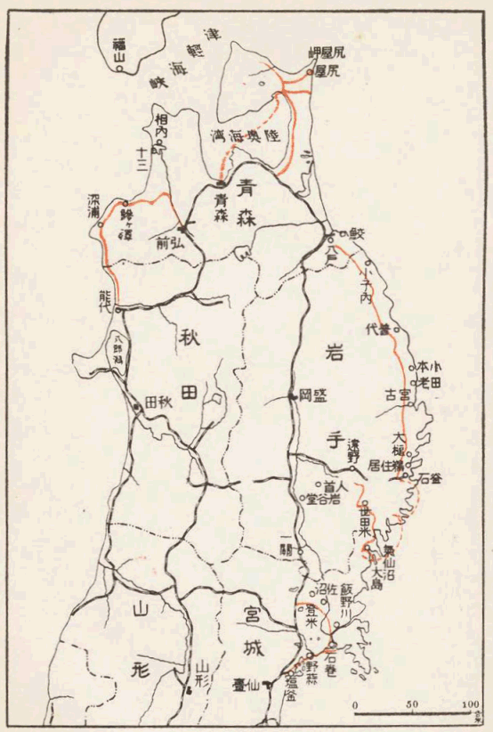
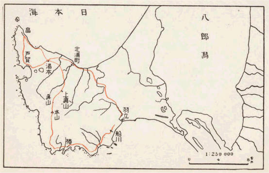

二十五、六年も前からほとんど毎年のように、北か東のどこかの村をあるいていたが、紀行を残しておきたいと思ったのは、大正九年の夏秋の長い旅だけであった。それを『豆手帖から』と題して東京朝日に連載したのであったが、どうも調子が取りにくいので中ほどからやめてしまった。
再び取り出して読んでみると、もうおかしいほど自分でも忘れていることが多い。いま一度あのころの気持になって考えてみたいと思うようなことがいろいろある。最近代史の薄い霞のようなものが、少しでもこうして中に立ってくれると、何だか隣の園を見るようななつかしさが生ずる。そこでなおいくつかの雑文を取り交えて、こういう一巻の冊子を作ってみる気になったのである。
身勝手な願いと言われるかもしれぬが、私は暖かい南の方の、ちっとも雪国でない地方の人たちに、この本を読んでもらいたいのである。しかしこの前の『海南小記』などもあまりに濃き緑なる沖の島の話であったために、かえってこれを信越奥羽の読書家たちに、推薦する機会が得にくかった。当節は誰でも自分の郷土の問題に執心して、世間がわが地方をどう思うかに興味を引かれるのみならず、よそもおおよそこの通りと推断して、それなら人の事まで考えるにも及ばぬと、きめているのだからいたしかたがない。この風がすっかり改まらぬかぎり、国の結合は機械的で、知らぬ異国の
ただこういう大切なまた込み入った問題を、気軽な紀行風に取り扱ったということは批難があろうが、どんなに書斎の中の仕事にしてみたくても、この方面には本というものが乏しく、たまにはあっても高い所から見たようなものばかりである。だから自分たちは出でて実験についたので、それが不幸にして空想のように聞こえるならば、まったく文章が未熟なためか、もしくは日本の文章が、まだこの類の著作には適しないためである。これ以上は同情ある読者の思いやりに任せるほかはない。
（昭和三年一月）
［＃改丁］支那でも文芸の中心は久しい間、楊青々たる長江の両岸にあったと思う。そうでなくともわれわれの祖先が、つとに理解し歎賞したのは、いわゆる江南の風流であった。おそらくは天然の著しい類似の、二種民族の感覚を相親しましめたものがあったからであろう。初めて文字というものの存在を知った人々が、新たなる符号を通して異国の民の心の、
ゆえに日本人の遠い昔の故郷を、かのあたりに見出そうとする学者さえあったので、
その上に双方ともに、春が飽きるほど永かった。世界のいずれの方面を捜してみても、アジア東海の周辺のように、冬と夏とを前うしろに押し広げて、ゆるゆると温和の季候を楽しみうる陸地は、多くあるまい。これはもとより北東の日本半分においては、味わいあたわざる経験であったが、花の林を逍遥して花を待つ心持、または微風に面して落花の行くえを思うような境涯は、昨日も今日も一つ調子の、
風土と季候とがかほどまでに、一国の学問芸術を左右するであろうかをいぶかる者は、おそらくは日本文献のはなはだ片よった成長に、まだ心づいておらぬ人たちである。西南の島から進んできて内海を取り囲む山光水色の中に、年久しく栄え衰えていた人でないと、実はその美しさを感じえないような文学を抱えて、それに今まで国全体を代表してもらっていたのは、必ずしも単なる盲従ないしは無関心ではないのであった。いま一つ根本にさかのぼると、あるいはこのような柔らかな自然の間に、ことに安堵して住み付きやすい性質の、種族であったからということになるのかもしらぬが、いかなる血筋の人類でも、こういう好い土地にきて喜んで永く留まらぬ者はあるまい。まったくわれわれが珍しく幸運であって、追われたり逃げたりするような問題が少しもなく、いつまでも自分たちばかりでのんきな世の中を楽しみおうせていたうちに、なじみは一段と深くなって、いわばこの風土と同化してしまい、最早この次の新しい天地から、何か別様の清くすぐれた生活を、見つけ出そうとする力が衰えたのである。
文学の権威はこういう落ち付いた社会において、今の人の推測以上に強大であった。それを経典
江戸のあらゆる芸術がつい近いころまで、この
その話をできるだけ簡単にするために、ここにはただ雪の中の正月だけを説いてみるのだが、今説こうとしている私の意見は、実ははなはだ小さな経験から出発している。十年余り以前に仕事があって、冬から春にかけてしばらくの間、京都に滞在していたことがあった。宿の屋根が瓦ぶきになっていて、よく寝る者には知らずにしまう場合が多かったが、京都の
白状をすれば自分なども、春永く冬暖かなる中国の海近くに生まれて、このやや
北国でなくとも、京都などはもう北の限りで、わずか数里を離れたいわゆる比叡の山蔭になると、すでに雪高き谷間の庵である。それから嶺を越え湖を少し隔てた土地には、冬籠りをせねばならぬ村里が多かった。
つれておでやれうす雪に
汽車の八方に通じている国としては、日本のように雪の多く降る国も珍しいであろう。それがいたる所深い
われわれの祖先がかつて南の海端に住みあまり、あるいは生活の闘争に
すなわちかくのごとくにしてようやくに迎ええたる若春の喜びは、南の人のすぐれたる空想をさえも超越する。例えば
そうしてまた日本の雪国には、二つの春があって早くから人情を錯綜せしめた。ずっと南の冬の短い
東京などでも三月に
もしも新たに自分のために発明するのであったら、おそらくこのような不自然、不調和を受け入れることはしなかったであろう。辺土の住人が世間の交わりが絶えると、心安い同士の間には身だしなみの必要もなくて、
あるいは今日の眼から見れば、そんなにまで風土の自然に反抗して、本来の生活様式を墨守するにも及ばなかったのかもしれぬが、同じ作物同じ屋作りの、いずれも南の島にのみ似つかわしかったものを、とにかくにこの北端の地に運んできて、辛苦の末にようやく新たなる環境と調和せしめたのみか、なおできるならばシベリアにもカムチャツカにも、はた北米の野山にも移してみようとする、それがむしろ笑止なるこの国人の癖であった。かつて中央日本の温和の地に定着して、こんなによく調和した生活法がまたとあろうかと喜んだ満足が、あるいは無用に自重心を培養した結果でもあろうか。何にもせよ暦の春が立返ると、西は
ここにその正月行事の一つ一つを、別挙してみることは自分にはむつかしいが、例えば田畠を荒らそうとするいろいろの鳥獣を、神霊の力の最も
あるいは同じ穀祭の日に際して、二人の若者が神に
初春の祭のさらに著しい特徴には、異国のクリスマスなども同じように、神の木を飾り立てる習いがあって、これも広く全国にわたって共通であった。餅・団子の根本の用途は、主としてこの木の装飾にあったかとさえ思われる。飾ると言うよりもその植物の実を用い姿をかりて、一年の豊熟を予習せしめようとするのであって、すなわち一種のあやかりの法術であった。今日は最初の理由も知らず、単にこの木を美しく作り立てる喜ばしさのみを遺伝している。家の内の春はこの木を中心として栄えるが、さらに外に出ると門口にも若木を立て、それから田に行ってもまた茂った樹の枝を挿して祝した。この枝の大いに茂るごとく、夏秋のみのりも豊かなれと祈願したものであるが、雪の国では広々として庭先に
山の樹の中では松の葉が最も稲の苗とよく似ている。雪に恐れぬ緑の色をめでて、前代の東北人が珍重したのも自然であるが、しかもかような小さな点まで、新たなる作法の発明でなかったことは、正月の祭に松を立てるという慣習の、この方面のみに限られていなかったのが証拠である。
しかし雪国の暦の正月には、月は照っても戸外の楽しみは少なかった。群れの力と酒の勢いとを借りて、ある程度までは寒さと争ってはいるが、後には家の奥に引込んで、物作りの樹の周囲に笑いさざめくの他はなかった。そうしてこれらの行事が一つ一つ完了して、再び真冬の寂しさに復帰することは、馴れて後までもなお忍びがたいことであったろうが、幸いにして家の中には明るい
（大正十五年一月「婦人の友」）［＃「（大正十五年一月「婦人の友」）」は底本では「（大正十四年一月「婦人の友」）」］
［＃改ページ］久しい以前より自分はこの人の旧知の家を尋ね、ことに三河の本国の村里を物色して、どうしてこういう寂しくもまた骨折な生涯の旅行が始まったかを知ろうとしているのだが、まだ生まれた家の所在すらも明らかにならぬ。くり返して彼の紀行を読んでみると、何かあの時代としては珍しい事情があって、かかる遠国の大雪の底に、空しく親を思う百篇の歌を、埋めるにいたったことは想像しえられるが、『遊覧記』はそういう身の上話をするような私事の日記ではなかったのである。「雪国の春」を校正する片手に、ふと心づいて拾い読みに、再びいくつかの巻の正月の条を出してみたが、精彩ある村々の初春行事よりも、なお鮮かに自分の眼に浮かぶのは、
『遊覧記』初巻の「伊那の中路」によれば、天明三年の春までの紀行は、ある渡し場の舟が
天明四年の正月は信州の
雪の正月の第一回の記録は、この雄勝郡の柳田から始まっている。「小野の古里」というのがその日記の名であった。東海道の故郷の村と比べると、異なった風習がいくつともなく目についた。粟穂稲穂は信州などともちがって、この辺のは餅をもってその形を作った。オカの餅というのが奥羽の各地の習いであったが、餅を
この天明五年は真澄が一生の中でも、最も多く旅行した年であった。四月も終りに近く野は霞み
天明七年にはさらに陸前に入って来て、石巻から松島、仙台までも見物をした様子だが、これも記録がはたしてあるかどうか。現在まではまだ少しも知られておらぬ。とにかくにこの暮れのうちにはもう胆沢郡に引っ返していた。そうして旧知の村上家に客となって、次の初春を迎えたことは、「霞む駒形」という一巻が見つかったために、このごろようやく明らかになったのである。
徳岡は自分の地図には見えぬが、前沢の町に近い小部落の名であった。こういう村々の百四十年前の正月が、目に見るように詳しく伝わったのは、珍重すべきことだと思う。二日の朝は子供たちが年礼にくるのに、痩馬と称して松の小枝に銭をさして与えることは、出羽の雄勝の村も同様であって、この辺ではこれを戯れて馬に乗せるといっていた。明きの方ということは雷さまの年を越した方角のことで、それによって村老はまた田作りの豊凶を
天に花さけ地にみのれ
福は内へ鬼は外へ
というのであった。今でもそういう老人などがあるかどうか。尋ねてみたならばおもしろいであろう。七日の朝はこの土地では福は内へ鬼は外へ
いわゆるカセギドリのやってくるのは、この村などでは十二日の午前からであった。ケンダイと称する藁製の蓑笠を着た様子から、鶏のことだと考えていた者が多く、逃げて帰るときにケケロと鳴いてみたり、他村の群れと途中で逢った時は、雌鳥か雄鳥かとまず尋ねて、雄鳥といえば蹴合いをしようといって掴み合い、雌鳥と答えば卵を取ろうといってもらった餅を奪い合った。主人が憎まれている家ばかりはカセギドリの若い者が入ってきてあばれ、
こうして端から書き抜くと長くなるが、真澄のように方々の正月を、一人で見てあるいた人はないのだから、ことにその観察には教えられることが多い。仙台の近村で今も行わるる田植踊り、いわゆる弥十郎・藤九郎のエンブリ
この年の日記にはまだいろいろの話の種があるが、前を急ぐゆえに今は皆省略する。次の寛政元年は陸中の東山、大原の近くなどで正月をしたものであろうか。夏に入って六月の上旬にいよいよこの辺を立って、再び北上の路に就いた。その紀行が「岩手の山」である。
松前滞在の日記は五種ほど今あるが、その間がきれていて踪跡が明らかでない。彼とやや似た境遇の漂泊者が、あるいは信仰を種とし、あるいは文学によって、幽かに生活の便宜を得ていたこと、
それは寛政四年
この寛政四年の十月始めには、まる三年の
十三日には
此屋の四方のます鏡
いのれば神もいわいとどまる
などと、声々に唱えたと記している。十四日の夕方になると、ここでも胆沢あたりとよく似たカセギドリがやってくる。春田打つ男の人形を作って、これを盆に載せて手に持った少年が、いのれば神もいわいとどまる
春の初めにかせぎとりが参りた
といいながら入ってきて、「どちの方から、明きの方から」という問答の後に、餅などをもらって帰って行った。関東以西の
正月のごいわいに
松の葉を手に取り持ちて、祝うなるものかな
これは誰がほうたんだ
えもとさえもがほうたんだ
一本植えればせんぼになる
かいとの早稲の種かな、ほい／＼
と唱えてそのエンブリを摺った。松前でゴイハイ棒といったのも、たぶんは同じ田植舞が、かの地に移されていたものであった。十五日に女の子が雛を祭る習いがある。これも松前と似ていると記してある。注意すべき古風である。松の葉を手に取り持ちて、祝うなるものかな
これは誰がほうたんだ
えもとさえもがほうたんだ
一本植えればせんぼになる
かいとの早稲の種かな、ほい／＼
この地でいま一回の正月を過ごして、翌寛政七年の三月半ばに、われわれの旅人は外南部を去ったようである。近年
豆のかわほんが／＼
銭も金も飛んでこい
福の神も飛んでこい
これは今でもヤラクロなどと称して、南部の各村には似たる唱え言の用いらるる例が多い。あるいは古酒の香がするなどともいうが、つまりよき香をもって福の神を内に誘い、いやな香をもって鬼を外へ追い出そうというのである。カセギドリは津軽ではカパカパというが、このころはなおパカパカともいう土地もあったらしい。田打男の人形を銭も金も飛んでこい
福の神も飛んでこい
春の始めにそとめが参った
といい、男の児はタジドが参ったといって、銭をもらってダラコに入れて帰ったとあるから、もうこの辺では大人の儀式ではなくなっていたのである。これに反して鳥追いは十六日の払暁に、笛や太鼓のいかめしい
朝鳥はより、夕鳥はより
長老どのゝかくちは
鳥は一羽も居ないかくちだは、より／＼
これから所々を行きめぐって寛政九年の正月には西津軽郡深浦の湊にいたことが、「津軽のをち」という日記に見えている。日本海岸の方までくると、もう秋田領と似た風習が多かった。例えば雄勝などのオカの餅は、ここでは長老どのゝかくちは
鳥は一羽も居ないかくちだは、より／＼
同じような話ばかり続くから、もうこのあとは簡略に、目次のみを作っておこう。次の寛政十年の日記かと思う「津軽のつと」には、また小湊からわずか離れた童子という山村の正月が記してある。真澄の宿った家は農家であって、他には見なかったいろいろの慣行が残っていた。それをこの日記は細密に画にしてある。九日にはまた小湊に出かけて、新たにいろいろの見聞を添えた他に、座頭イタコの物言いや山家人の酔態、村の女の杓子舞の歌を手記するなど、心ある観察が多かった。前に引用した「奥の手振」とともに、真澄遺稿の最も価値多き巻である。彼はこの後三年ほどはなお津軽にいたが、正月の日記は不幸にして伝わっていない。享和元年の冬の初めに、最後に深浦を立って海づたいに秋田に入り、次の年の正月は久保田の城下にいた。その翌年の享和三年の春は、
翌文化元年は阿仁の荘にいた。「浦の笛滝」という一巻はあらあらと山村の正月が書いてある。この年は真澄は初めて男鹿に遊んだ年で、それから引続いて七、八年の間は、主として八郎湖の周辺の村々に、多くの知友を見つけて滞在したのである。しかも少しの間でもわが家というものを持たなかったことは、多くの日記によって知ることができる。二度目の男鹿の勝遊は文化七年の三月から次の年の二月の末まで続いていて、三巻の詳しい紀行がある。この年の正月記事は「
真澄の雪国の春の日記は、自分の知るかぎりでは以上十一度の正月以外に、もう伝わっておらぬようである。これから後の十七、八年は、もっぱら秋田領の地誌を作るために費やされ、その間に吟詠の事業があったので、珍しい日記を中止したものかと思う。私は将来の東北文化の研究に向かってこの人の事業が何ほどの功績を有するかを説くために、例を新年習俗の記述にとったが、もちろんこれと関係のない方面にも、他には求められぬ特別の資料は多いのである。しこうして問題は何ゆえに菅江真澄の著作ばかりが、ただひとり百年を隔てて今にその価値を認められるかであるが、それにはもとより学問と文章との、大きな力も
彼の生涯を一貫して、世に時めくという類の朋友は一人もなかった。学者としては弘前の毛内茂粛、斎藤規房父子のごとき、または久保田の那珂通博のごとき、晩年には八沢木の大友直枝なども、次第に彼の詞藻の半面を認むるにいたったようだが、もとより
「
盲人は弟子を連れて来て、一曲の後にはいわゆる
天明八年二月二十一日夜の条に、胆沢郡六日入の鈴木家の囲炉裏のそばに、何一、くれ一の二人の盲法師が、一夜の宿を与えられて坐っていた。三味線を取り出して弾こうとすると、童児が口を出して「ゾウロリ（浄瑠璃）なじょにすべい、それ止めて昔々かたれ」という。「何昔がよかろうか」というに炉の向こうにいた
「さらば語り申そう聞きたまえや。昔々どっと昔の大昔、ある家に美しい娘が一人あったとさ」と、語り始めたのは琵琶法師
その翌々日は鈴木氏の家を出て、徳岡の村上家へ行こうとした。道案内は一人の少年であった。雪解の路にあるき疲れて、草原に腰をかけて休んでいると、兎が飛び出して走って行った。これを見て童児が次のような話をした。昔兎に行き逢うて
朝日さすこうかの山の柴かぢり耳が長くてをかしかりけり
これを聴いて兎の返歌、やぶ下のちり／＼河のごみかぶり尻がよぢれてをかしかりけり
こんな歌を子供が記憶するのは、いうまでもなくボサマの教育であった。それよりもおかしいのは奥の草野の彼岸の日の日影に、路にうずくまって兎と田螺の話を、笑って聞こうとした彼の心持である。真澄この時は三十五歳、長い旅刀をおび、頭巾をかぶっていたと想像せられる。天明八年といえば江戸でも京都でも、種々の学問と高尚なる風流とが、競い進んでいた新文化の世であった。しかるにそれとは没交渉に、遠く奥州北上川の片岸を、こんな寂しい旅人が一人あるいていたのである。（昭和三年一月十六日記）［＃「（昭和三年一月十六日記）」は底本では「（昭和三年一月十六日）」］
［＃改ページ］新しいわれわれの交通方法は、まだ完全に旧い天地と調和していなかった感じがする。たとえば日本のごとく雪の深い、谷と崖ばかり多い国で、これほど頻繁に汽車を走らせている国は、世界中に他にはもうないようである。
今年はまたことにひどい雪で、ほとんど毎日といってもよいくらいに、どこかで大風雪が汽車を埋めている。遠い土地にばかり友だちを持っている者の、本当に寂しくてたまらぬ季節である。
それだのに村の普通の生活は半分しか理解することあたわず、政治とか読書とかいう隣人と共通でない趣味に、心を傾けようとする人々が、田舎の隅々に分散して居住する時代になった。この人たちの互いの交通路にも、冬はしばしば目に見えぬ
たとえば東京などでは、この二月の初めの土曜日が初雪で、それが野山の松や
平たい言葉で定義づけるならば、友だちとは要するに話をする間柄である。しかるに一年の三分の一ほどは、その話の種が切れてしまうのである。消えてなくならぬまでも雪の底に埋もれてしまうので、すなわちまた一つの交通の故障である。
汽車には限らず、日本では何でもかでも、真似するつもりで無造作に始めた仕事で、後に意外な真剣の実験をさせられ、しようことなしに困りぬいて、それからりっぱな解決をした場合が多い。交際の問題なども、今に必ず何とかなるであろうが、さし当たっては当てにしていた空想の飛行機は飛ばず、同情の乗合自動車はいつでも延着するとなれば、いかに詠歎せられる詩の孤独高尚なる個人主義にも、やはりコタツの向こう側の、空席見たようなものができずにはいないのである。
私はおりおり東北地方に居住する友人から、毎日々々新聞を友としてコタツで暮らしているという手紙をもらう。新聞がはたしてどの程度にまで、コタツの向かいの珍客の代りをするものであろうか。それを実験すべくわずかな紙面を借りて、逢うことのできぬ雪の中の人と、及び越しにこの共同の問題を考えてみようと思う。
東京の私の家のコタツには、いつでもいわゆる洋服を着た少年と少女とがあたっている。非常に寒くてたまらぬからではなく、他には足を投げ出してごろんとしている場所が、冬になるとなくなってしまうからである。それゆえにたいていばかばかしくぬるい。自分などはちょっと側へ寄ると、きまって何か用事を思い出して立ってしまう。つまり格別の必要が実はないのである。
こういうコタツを見るたびに、自分は時代というものを見ているような感じがする。温度はコタツの第一の要件であるにもかかわらず、それをこの程度に変更してまでも全国の大区域にわたって、この趣味を流行させた時代がかつてはあったのである。それが今日はいかにも意味のないものとなって、単に強い反対が起こらないという原因だけで、わずかに残っている地方もこの通り広いのである。これと同時に旧日本の約半分においては、そのコタツの火はなおきつく、必要は今もって少しも減退していないのであるが、しかも二、三分間も考えて見ればすぐわかるように、コタツもまた確かに時代の産物であって、決して
蒲団がわれわれ日本人の夜具の一種になったのも、やはり中世以後の事でなければならぬ。その証拠にはこの語もまた支那の宋代あたりの音で、別にこれに対する固有の日本語はなかったのである。
フスマ（衾）というのは大形の衣服のことであった。ヨブスマというのは、全身を蔽い包むほどの大きな藤布製などの夜具のことで、妖怪のヨブスマもそれから出た名かと思う。近いころまで山村で使用していたのは、いずれも袖がありまた襟があった。こんな形の衾の下には、コタツはとうてい発達しえなかった。つまりコタツ時代は歴史の教科書にこそ書いてないが、そう古くはないある昔の新文化であった。
とにかくに自分はコタツその物よりも、コタツ時代とも名づくべき前期生活に興味をもつ。ことにこの奇抜にしてしかも悠長なる保温法を、現在の完成にまで持ち運んで来たところの、文明の過程には考察すべきものがあると思う。
けだし火の最も原始的なる魅惑力は、炎であり光であった。子供などは何の入用もない場合にも、物を燃やして突如として咲く花の、あでやかさを賞玩しようとする。暗黒の不安を追い払うためには、はねてぱちぱちと音を立てるような、豆がら、
必ずしも巌窟の穴の奥に隠れた大昔には限らず、家を建て
月は洩れ雨は漏るなという古歌にもある通り、かがやく青空の光ばかりを、差別して内に迎え入れる方法は、以前にはなかったのである。それが今日のようにどの室も明るく、最早炉の火に炎と光明とを仰ぐことを、必要とせぬまでになったのは、単なる人間の智慮分別といわんよりもむしろ具体的に紙の力、あかり障子の功労といったほうが当たっている。
その後紙はおいおいにガラスに取って代わられ、ついには日中の電気燈とまで進んできて、人はいかなる地下室の底ででも、動きうるようになったのであるが、それは必ずしも結構なことでないかもしれぬ。ただ少なくとも数十年来の火の光を断念し、かつては
旅人の文学などは通例誇張が多く、かつ同情はあっても省察が常に不足であった。ことに一丈、二丈の雪の底の生活にいたっては、もし外部から誰かが心づくのを待っているとしたら、こうしてコタツの起原のごとくに、自分でも忘れてしまうころまで捨てておかれるであろう。土地に住む者が静かにその閑暇をもって、独立して考えてみるより他はないのである。
あるいは考えて見た人も多かったのかもしれぬが、少なくともそれは山一つ彼方までも伝わらなかった。それゆえに今日のごとく、書物で学問をする風が盛んになってくると、かえって谷々の冬は寂しくなるのである。コタツのついでをもって今少しくこの点を話してみたい。
鈴木牧之の『北越雪譜』の中には、信州秋山郷の山家の夜の光景が画に描かれている。藁で造った一人用二人用の
北へ北へとこの国を開いて来た民族が、今もって稲を作らずには片時も安心しておられぬというわけは、稲が故郷の亜熱帯の植物であって、神の
「一筋の背中の蒲団」と、系統を同じくする笑話の一つに、父よこの村では
それほどに十能というものが、もとは重要でない器具であった。つまりはコタツ火鉢の類が少なくて、火を取るべき場合がまれであったのである。十能は奥羽と九州ではヒカキまたはヒトリといい、他の中央部の大区域ではセンバと呼んでいる。センバも十能もやはりコタツと同様に、その語の根原が自分にはまだわからぬが、とにかくに古い道具でなかった証拠には、これまた今一つ以前の固有日本語の、これに該当するものがないのである。
火カキというにいたった理由だけはほぼ明白である。すなわち今ある長火鉢の灰ならしと同じで、夜分囲炉裏の火をいけるために灰を掻き上げる器を、時おりは火種を運ぶのに兼用していたまでであったことは、あの格好からでも容易に想像することができる。それが台十能などという特別の形式を供えるに至ったのは、もちろん木炭の製法が普及してから後の事で、その木炭はまたつい近年まで、多くの田舎の家庭においては、わざわざ製造せねばならぬ必要を認めなかったものである。
センバが多くの雪国において珍重せられたのは、考えてみれば深い仔細があった。これは大事な賓客のために、特に奥座敷の雨戸を明け放すのと同じ趣旨で、炉の火を取り分けて別に一席を設けることは、日常普通の訪問者に対しては、決してせぬ習いであったからである。それにはこの器物の金属としての新しい趣味も加わって奥羽の各地のごとく夏の土用の炎天でも、客がくるとまず第一着に、センバを持ち出すのをもって
古風の客あしらいにはこの類の方式化が多かった。今日の実際では、客を家族の一員のごとく待遇することが、非常な好意のように喜ばれることになったが、家には家長の権力が強大である以上、以前はそんなことをするのを非礼と考えたに不思議はない。それゆえに主人はわが家と設備との一部分を区画して、それをまれなる旅人の臨時の領分に提供したのである。
こういう方面にも日本人の人情は変遷した。そうして形体だけの今なお残っていて、われわれをまごつかしめる例は多い。
いかなる種類の新しい文化でも、必ず一度は経過せねばならなかったごとく、コタツの普及にもやはり初期の制限はあったようである。十能の構造をどれほど改良してみたところで、炭焼の技術がこれに伴のうて進歩せぬかぎりは、コタツの恩沢はとうてい遠く及ぶことがむつかしかった。
オキと消炭との能力だけならば高の知れたものである。せいぜい茶の間の付近にいま一つの出張所を作るくらいのもので、出居・奥座敷・離れの四畳半という所まで、たびたび焚き落としのごときものを運んでいるわけにはいかぬ。
それゆえにコタツはもと、主として夜の設備であったということができる。俳諧『続猿蓑』の連句にいわく、
別を人の言ひ出せば泣く 里圃
こたつの火いけて勝手を静まらせ 馬
一石踏みしからうすの米 沾圃
ふけて皆の者がさアもう寝ようとなって、炉の鍵を引上げ板敷に釜をおろし、いぶる燃えさしを土間へ出してとっくりと消してから、残りのオキを灰に埋め、その上へ大きな蒲団を覆うて、もぐり込んで一同が睡ったのである。夜中に少し寒くなったとしても、起きて蒲団をまくって新たに焚き付けるか、辛抱するかよりほかには別に方法とてもなかったのである。こたつの火いけて勝手を静まらせ 馬
一石踏みしからうすの米 沾圃
和歌に埋火のもとなどと、詠ずればこそはなはだ風流であるが、まず最初のコタツはこれくらい不便なものであった。丹念な家では夏中のオキを消して貯えておいて、夜永の寒さに出して使ったかもしれぬが、たいていは起きているかぎり大火を焚き、残りの温気だけをコタツとして利用したのである。
信州などではこのなかば概念のような暖か味ほとぼりを、いかなる意味でか知らぬがクヨークリと名づけている。クヨークリは
それが堅炭の世となり、さらにいわゆる
自慢してよいか悪いかは別の論として、炭焼の事業だけは日本の進歩が世界一らしい。国の生産総量のみならず、これが配給貯蔵方法の完備、利用応用の巧妙さから、わずかな歳月の間に改良の成績をあげえた点まで、これだけ鮮やかに他国を抜いた生産は、おそらく指を折って
イタリアという国の日本と似ている一つの点は、南の半分ではストーブというものを知らず、炭火の小さな手あぶりを、客にも出せばめいめいにも控えていることであるが、気の毒ながら彼はまだコタツを知らない。もっとも暖かいからあるいはもう永久に真似をせぬかもしらぬ。その他のヨーロッパの寒い国々でも、木炭という言葉はあり、以前は山に入ってわざわざ焼いていたことも確かだが、その目的の限られていたことは、日本の中世と同じであった。全体に西洋人の採温法はつい近ごろまではわれわれよりもおくれていた。炭を使うのは
ところがわれわれの方ではどうかというと、炭の趣味は今や流行の絶頂に達したかとさえ思われる。都市においてはガス・石炭と対抗し、農村にあっては囲炉裏の火から分立して、コタツ、火鉢を一つの城砦として、防ぎ守らんとする特殊の利害、特殊の文明のごときものが新たに現われているのである。それが新聞と雑誌とたくさんの雑書とを味方に引入れて、コタツに籠城するいわゆる有識階級を形づくっていることは、われわれが冬になるごとに最も痛切に実験するところである。
もっともこの傾向をことごとく木炭の責任に帰するは明らかに不当な速断である。炭自身にはいまだかつて、砂糖の甘味や酒の酔いのごとき、流行をうながす力は具えていなかったので、実際はあたかも国風の変化、ことに家を同じくして住む人々の相互の関係が、一つの囲炉裏を取り巻くほど緊密でなく、さりとて飛び出して竈を別にするほども疎遠ならず、つまりは木炭を利用して各自の室のコタツに、割拠していたいというくらいの時代に到達していたために、この物が目にたって用いられることになったものかと思う。
人間が家を持ち家族というものを引きまとめえたのは、火の発見の結果といってよろしい。火と温度と食物との一大中心として、囲炉裏というものがもしなかったならば、とうてい今見るような家庭および社会はでき上がらなかったろう。民の竈といい、もしくは戸数を何十何煙といって算えたのは、実は一家の内に火を焚く場所が、ただ一つしかなかったことを意味するのである。
その火の管理者を日本ではアルジと名づけ、後にはまた御亭とも旦那殿とも称した。そうしてその管理権の所在を、具体化したものが炉の横座であった。横座とはいってもそれが正面の席であって、事実はその左右の敷物がいずれも縦に連なっているに対して、家長の座だけは横畳に敷いてあるゆえに、そういう名前が古くから生じていたのである。
通例は向かって炉の右手、すなわち横座から左になる一側を、
このついでをもってなお言うならば、
さてこれほどまでに秩序を正して、家には一つしか火の中心を作らぬように努めたのであるが人の心の変化はぜひないもので、ついに室ごとにコタツを置かねばならぬ時代がきた。最初は取り扱いに面倒な年寄などをすかして、安火一個に封じ込めたりしたものが、後には息子が新聞や本を抱えて、みずから独立を宣するようになった。それを後援したのは紙とガラスの障子、次にはランプまた電気燈などであった。がもちろん彼らはこれを教唆したのでなく、木炭と同様に頼まれてただやってきただけである。
日本にもし雨雪が少なくて、土で塗った家が発達し、もしくは石を重ねて二階三階ができるくらいに、地震の心配の少ない国であったら、平気で大火を燃やして、いつまでも炭の便利は認めるにいたらなかったかもしれぬ。ところが城下に木の家を小さく建てて住むには、焚き火は何分にも不完全でいけないとなって、寒くともこれにて我慢をすべしと、
炭は足利時代の末のころまでは、京都の武家ですらなおご馳走の一部分であった。火箸で炭をはさむことを知らなかったという話も伝わっている。若い時にある大家に奉公をしていた女性が、私は炭は手で取るものとばかり思っていたというのを聞いて、手が汚れて困ったろうにと不審すると、それではもうこの節の炭は、油を引いて一つ一つ紙で拭うてはおらぬのかと、かえってびっくりしたそうだなどといっているが、これも織田信長の料理人の逸話と同じく、成り上がり武家の俗悪を冷評したところの、いわゆる一つ話の一つであろうと思う。
要するに炭はもと趣味のもので、自然天然の寒気がうながしてこれを製産せしめたものではなかった。本来深山の奥を出でてまずいったんは町城下の生活に参加し、それから再び逆戻りして徐々に村里に入り込んだことは、金・銀・水晶などとその径路を一つにしている。明治時代の都府文明の大飛躍、これに帰伏し
奥州で津軽・栗原・信夫、羽前の
それというのが本来木炭の用途が、原則として家庭日常のものでなかったからである。狸か何かの皮を縫い合わせて、大なる
すなわち物は真黒で無風流であろうとも、非常に高尚なる連想を伴のうたものであった。手短にいえば新文化であった。筆者などの少年のころに、家の前の村路が国道になって、毎日々々牛車に石炭を積み、
火を焚けば話がはずむという原因結果は、よほど久しい大昔からの、不思議なる法則であったらしい。前年オランダのローレンス博士の一行が、二度目のニューギニア雪山の探険を企てた時には、いろいろ考えた末にボルネオ内地の土人を人夫に連れて行った。勇敢で従順で正直なことは申し分がなかったが、ただ一つの欠点は夜営地で焚き火をさせると、火のある間は話をしていてどうしても
この点は酒などの効果もよく似たものであった。酒にもし人をして歌わしめ、
ゆえに家より外で焚いた火を炭にして、持ち込んでくるということは革命であった。三宝荒神の信仰に統一の力がなくなったことを意味するのみならず、炭に伴のうて遠国の物語が、だんだんに入り込んで村里の歴史を紛乱せしめたことを、推測することも困難ではない。西洋の国々では炭焼は無口な山人としてゆかしがられているが、われわれの中には反対の例が多い。例えば佐々木喜善君の『江刺郡昔話』などは、その大部分がかの郡から来ていた炭焼から聞いたものだという。東北の山奥には思いがけぬ地方から入って炭竈を築いて火を焚いている者が今でも多い。それからまた一方には文芸や思想の上においても、ちょうど県町村の計画をもって、製炭技術の講習会を開催すると同じように、縁もゆかりもなかったことを教えられる場合が多い。家の火の祭壇はしだいにその信徒と供物とを、失わざるを得ないわけである。
いわゆる小正月わか年の晩には、豆や
しかし結局は移って次の火に進むべき時節の、すでに近づいていることもまた確かである。しからば百年の未来の回顧の日のために、われわれは何を記念として留めておけばよいのであろうか。長い大きな旅をしてきた国民ではあるが、われわれ平民の足跡は思いの外に幽かである。何もなすことなく過ぎてきたわけでは決してなかろうが、あまり前途を見つめていたためか、歴史にはまだ注意の及ばなかった隅々が多い。このコタツ時代が今のままで終了するとしたら、またたくさんの過去が永久に忘れられるであろう。
今のうちに少しずつでも考えておいたらどんなものであろうか。あるいはこれも下らぬ
しかも今日では火棚、火鍵はもとの黒光りのままであっても、もはや手をたたいてヒホドを拝む者はなくなった。それだのにこんな形式が迷信となって残っている。すなわち古い信仰は、かえって革命家の手によって、保存せられていたことになるのである。それを考えまた語りうる能力のある人がコタツによりかかって静かに雪中の日を送っている閑な時間に、なお一度後世の学徒に代わって、この消え残る上古の光と炎とを、たどってみることも意義があると思う。
（昭和二年二月「東京朝日新聞」）
［＃改ページ］奥羽の天然を愛する者が、少し本意ないことに思っているのは、夏の日の草木の緑色が、あまりに強烈で柔らかみのないことである。それは人口のまだ稀薄なためで、今にも大いに開けて赤土山の公園などができたら、別に中央部と変わることはなくなるだろうという人もあるが、必ずしもそうでなさそうに思われるのみならず、そういう破壊作用を待っているわけにもいかぬ。
東北の風光の美しいのは誰に聞いても紅葉の秋だという。それから後の冬木立の山野もよし、春は四峰の雪白水が充ちあふれて、蛙・郭公の啼くころの若緑も、永く待っただけに、人の心をとろかすようにあるらしい。それが再び次の秋に移っていくまでの数週間は、土地の人々には休憩であり昼寝であって、必ずしもこれを顧みるに足らぬのか知らぬが、
あれはおそらくは日の光の効果か、または気中の水分の加減でもあろう。いま一段と高い緯度に進みと、しだいにこの色が白々と、幾分軽くたよりなくなるように思うことは、北ヨーロッパをあるいた人の、誰でも容易に経験するところである。太平洋岸では仙台松島を過ぎ、一望平遠なる沼沢地域に入ろうとするころから、緑の色のきつさがおいおいに眼に迫ってくる。時刻のせいか空模様かとも考えてみたが、何度通っても同じ感じで、行けば行くほど寂しさが加わり、ついには一人では東北にはくるものでないとさえ思ったこともある。
あるいは古人も心づいていたのではないかと思う。もしそうでなければ無意識に、この過多の涼味を加減することを企てていた形跡がある。秋風ぞ吹くの白河を越えると、街道の並木の赤松がことに多くなる。その松の幹の色が何ともいえないいい色に
それだけならよいが赤松もどしどし伐られる。自分らが物を覚えてから、奥羽の並木の払い下げられた例は多い。山林は風致林という名目を設けて保存しながら土木の官吏は予算を捻出する場合に、いつでも心なく並木の老松の伐採を計画する。そうしてその跡へはめったに栽えたためしがなく、いわんや何を栽えようかなどはまるっきり考えぬことにしているようである。
もっとも樹を栽えることは近代の一つの流行だが、それはただ個人の家のまわり、さもなければ学校とか小公園とかの、いったん土を削って地肌を見せた所へ、そんな土地にも成長するものを栽えるばかりで、広い平原の大きい風景の調和などは、何人の任務でもないから誰も考えない。十和田に七月末に行ってみると、五月下旬の半ば解けた雪の間から、たった一本の桜が咲いていた。前回の時よりもまだ寂しい。いやなものだがせめて文化式赤瓦の家なりとも、そこらの湖畔にあればよいと思った。花巻の温泉は万事電気ずくめの新式遊覧地だが、山を眺めているといつも夕方のような気持がする。何ゆえにこの山に百合の紅白、もしくは
実際また人間の力で、そうたくさんの変化は加えられないのかもしれぬ。しかし東北の人の心持は、不思議に古くからの路傍の松柳に現われていたのみならず、それがなお家々の庭前の花木、さらに一歩を進めては娘たちの身だしなみの上まで、偶然ならず認められるのは、おそらくわれわれのまだ知らぬ真実であろう。
数年前に私があるいたころは、外南部などには白い布の流行が認められた。夏の花の多くは小さいのに比べると、これは大きく動くから印象は深かったが、それでも山吹や鮮かな藤色のような、快活さはやや減少するように感じた。すなわちあまりにひとりひとりの空想が自由になることも、土地のためには幸福でないように考えられるのである。
自然はもちろん人が愛玩するために設けられたものでない。南北極地の雪の野が、永久に真白で一つの斑点もないごとく、ニューギニアの島などの緑樹海は、今なお完全にわれわれに閉ざされている。しかし人間は求めざればやまぬ。ウォレェス博士の『
（昭和二年六月「週刊朝日」）
［＃改ページ］旅行者にはよい旅行という記念は多いが、よい景色という語はかえって空に聞こえる。松島の海などはかつて小舟で渡った日、沖から雨の横吹きがあって、赤く濁って騒いでいたために、今に自分はなつかしいという感じを抱くことができぬ。せっかく来たのだからと宿にいて日和を待つだけの熱心のなかったのは風流に反するかもしれぬが、暮春初夏の静かなる日の光に手伝ってもらってならば、松島ならずとも多くの島山は皆美しいわけである。とにかくに名所はわれわれにとって、実は無用の拘束であった。
それよりも口癖のように海の風景を説く日本人が、支那の新古の画巻などから趣味の教育を受けているのは存外なものである。窮天
海山は広くのんびりとしているけれども、われわれの庭はせせこましい。しかるにこういう松や岩を賞美する者がよく用いるほめ言葉は、持っていけるものならうちの築山にして眺めていたいなどという、不心得な話である。いい画を見ると真に迫っているというのはよいが、よい風景に対して画のごとしだの、画に描くとも及ばずなどというのは、よほど平凡なる天地に生を受けた大陸人の口まねに外ならぬ。そんな人たちと風景の論をして見たところで、話の合わぬことは始めから知れきっている。
風景は画巻や額のようにいつでも同じ顔はしておらぬ。まず第一に時代がこれを変化させる。われわれの一生涯でも行き合わせた季節、雨雪の彩色はもちろんとして、空に動く雲の量、風の方角などはことごとくその姿を左右する。事によるとこれに面した旅人の心持、例えば昨晩の眠りと夢、胃腸の加減までが美しさに影響するかもしれぬ。つまりは個々の瞬間の遭遇であって、それだからまた生活と交渉することが
いつごろから用い始めたか、日本には名勝という語があって、近年法律をもってこれを指定し保存することになっている。名所という俗語の音の転訛ではないかと思う。とにかく名勝は風雅道の霊場、文人伝の古蹟ともいうべきものだが、風景のほうからいえば最も押しの強い押売である。今さら旅人の拘束せらるまじき旧法則である。いわゆる紀行文学のごとき、図書館では地誌の部に置かれながら、いかにも狭い主観の、断独的個人的の記述であることは、すでに心づいた者が多いのであるが、名ある古人を思慕することが、無名の山川を愛する情よりもまさっている国柄では、風景の遇不遇ということがことに大きな意味を持つ。水陸大小の交通路はもとより、絵葉書も案内記も心を合わせて、今古若干の文人の足跡ばかりを追随させ、わけもない風景の流行を作ってしまった。風景自身にとってはむしろ顧みられぬのは本意かもしれぬが、静かに田舎に住んで天然の美しさを学ぼうとする者のためには、無用の誘惑でありまた有害な錯乱である。
天然の観賞だけなりとも、せめてわれわれは態度の自由を保ちえたいと思う。都会人の具えた感覚の力の中で、やや精徴を［＃「精徴を」はママ］誇りうるのは舌と鼻とだが、それも煙草に荒らされて今はやや衰えんとしている。目と耳とにいたっては最初から、概して田舎には及ばなかった。そうでなくとも狭苦しい経験の中から、彼らが発見したような風景の標準に、全国民が引き廻されてたまったものでない。中央集権の腹立たしい圧迫の中でも、一番に反抗してみたいのは文芸の専制である。それも日本人を代表しうる優秀な創造力、ないしは親切周到なる観察から出たものならまだしも、何かというと外国の受売をして、いわゆるつくねいも式山水をありがたがるような連中に、風景を指定してもらおうとする客引根性はやめにせねばならぬ。それが最も真率にこの国土を愛するの道である。
日本固有の平民文学において、最も豊かなものは共同の詠嘆であった。五人、七人の感動を同じくする群れが、特に声の清い舌のなめらかな一人に委托して、代わって眼前の情趣を詞章化せしむる場合に、必ずしも丁寧の叙述を要しなかったのは当然である。ことに風光はいたる所の岡や渚に、衆とともに楽しみ味わうべきものであったゆえに、もどってこれを見ぬ人に伝えるような、物語の発達する余地はなかったのである。したがって文学が少数の才子によってもてはやされる世となれば、その精彩の描写はたちまちに彼ら多数の同胞を動かして、かえって異国の文人の好尚に盲従して、自分たちの景色を品評するようになった。その弊やすでに朗詠古今の昔に始まっている。この久しいマンネリズムの穴の底から飛び出すためには、われわれは最も勉強して旅を試み、また旅の試みを語らねばならぬ。白砂青松という類の先入主を離れて、自在に海の美を説く必要があるのである。
自分は松の名所をもって世に知られた中国の一地方に生まれ、ことに目に映ずる鮮かな緑、沖から通う風の響きに親しみを持っている。しかも故郷に対する叛逆であろうともままよ、今もって全日本を通じて、海の歌、海の絵とさえ言えば、ぜひとも松の木を点出しようとする古臭い
中国の海の辺をあるいていて、見落とすことのできぬのは海の草の繁茂である。歌に玉藻と詠んだのはまた別のものかしらぬが、一種たけ長く幅の細い、たとえば蘭の葉のごとくにして表なめらかなのが、岸にうち寄せるとたちまち白く枯れて、風の後などは堆く積まれている。岸近く船で行くならば、必ず浜の松の緑よりも珍しい光景をなすことと思われる。備前の
海の草は磯の香というもののもとらしいが、浪に打ち寄せられて枯れ朽ちる時でないと、旅をする者の目にふれることが稀れである。天草下島の
佐渡の
牛は盛んに放し飼いをしているが、全体に佐渡はまだ草の豊かな島だから、このように花と花との間に、領分の境ができて相争うのであろう。それに人間が干渉をして、
島であるためか、あるいは島の片蔭であるためか、佐渡の海府にはまだいくつもの古い風景が残っている。海に迫った山の端の断崖には、六月潮の緑を背景として、薄桃色のシャクナゲが咲いている。阪を越える村人らはその艶麗なるかがやきに堪えず、思わず一枝を折って、手に持ってやがてまた棄てていく。船からこの花を見ていくような山は、もう日本には他になかろうかと思う。
それから島の西岸を南へ進んでくると、少しずつ水際に平地ができて、やがては五戸、三戸の近世の移住者が、絶壁を背にして家を構えている。海の生産は一年の活計に足らぬので、いずれも崖路を登って高地の田を作るのである。紀州の熊野なども同じように、沖から望めば一帯の沿海段丘であるが、佐渡での特色は屏風のごとき山の端に、喬木の深く茂っていることである。山の田に灌漑した水の末がにごった滝となってこの間から海に落ち、無数の鳥類が傍に憩い遊んでいる。波濤の音に競うて声は最も高く、まったく人間の危害から遠ざかっているゆえに、その動作がいたって自在である。北の大陸から毎年渡ってくるものの、この島を中宿とするのは蒼古以来の習わしであったろう。雪の越後に比べては冬も暖かいが、海が荒れて風強く、人は皆小屋の中に閉じこもる。その上にいろいろの木の実草の実が、今なお豊かに供給せられるのである。自分らはこういう地形を鳥の極楽と名づけているのだが、佐渡のようにあらゆる条件を完備した極楽は、そう多くはないように思う。
東海道ならば
歴史以後にも日本の海岸は大変な変化をした。土が流れて磯を埋めた区域が、落ち込んだ部分よりはずっと広かったかと思う。
草木はこれによって第一の影響を受けた。今日空漠の荒浜に、生き残っている草の花などを見ると、負けて帰ってきた勇士を見るの思いがある。日向の南の海岸を行くと、岩の蔭に隠れてなおいろいろの南らしい植物が生存している。その間を縫うて繁茂する葵葉の朝顔などは、おそらくは中ごろ民家の園から逃げて出たものではなく、われわれがまだこの花を
浜に這う植物としては、葉の表が平らですべりよく、枝に力があって花をささえるもの、たとえば
南部日本のハマボウに対立して、北に進めば則ちハマナスの花がある。支那では
 瑰
瑰全体にこの木の多くある所は、里や林をやや離れた、
ハマナスの根の皮は、採って染料にしている地方がある。北海道などでは実を貯えて食用とする土人が多く、寂しい旅の者ならずとも、親しみを感ずる木であった。
浜に咲く花はこの他にもいくらもあったろうが、たいていは今は忘れている。わずかに残った記憶の中を捜すと、男鹿の突角の高地、
海に臨んだ岡の
樹の花では
それから
話はやや北方に偏するけれども、ぜひとも言ってみたいのは
ところが岩手県では
秋の初めのころであった。自分は尻屋崎の燈台を見て後に、山を越えて
海はこの辺では広大な砂浜を隔てている。カシワ林のはずれには小さな沼が、いくつともなく一列に繋がっていた。沼の岸を通るときにはかえって心づかなかったが、それはことごとく昔の海の断片であった。地図の上で見るとよくわかる。これから南方の小河原沼にかけて、かつては一帯の長い潟であったのが、砂に押し付けられて萎縮いていくものと見えた。午後にこの猿ヶ森の村を辞して田名部に戻ろうとする村境の峠の上から、いま一度振り返って東の浜を見た時には、こんな寂しいまた美しい風景が、他にもあるだろうかと思うようであった。見渡すかぎりのカシワの林に、わずかの村里などは埋もれつくしている。切り揃えたような緑の平面の外には、白々とした砂浜が横たわり、外は大洋が荒れ狂うている。これとは反対に内側の、カシワの林との堺には一列の静かな小沼が、たとえばエメラルドを緒に貫いたごとく、きらきらと光っていた。画にかくとしたらあまりに単純な、松にも巌にも縁のない風景であったが、自分としてはいつまでも忘れえない。
自分はわずかに残存する前代の天然をなつかしむあまりに、やや不当に人間の改革を軽視したかもしれぬが、要するに日本人の考え方を、一種の明治式に統一せんとするが非なるごとく、海山の景色を型にはめて、片よった観賞を強いるのはよろしくない。何でもこれは自由なる感動に放任して、心に適し時代に相応した新たな美しさを発見せしむるに限ると思う。島こそ小さいが日本の天然は、色彩豊かにして最も変化に富んでいる。
意味なき因習や法則を棄てたら、今はまだ海山の隠れた美しさが、よみがえりうる望みがある。つとめて旅行の手続きを平易ならしむるとともに、若くして真率なる旅人をして、いま少しく自然を読むの術を解せしめたい。人の国土に対する営みも、本来は花咲き水の流るると同じく、おのずから向かうべき一節の路があった。天然は始めから、彼らによって破壊せられるように、用意せられてあるのであった。しかも地理の学者は強いて破壊というけれども、それは単に変更であり進化であった。必ずしも装飾の動機を持たずして、人の加えた変更にも美しいものが多かった。単なる人間味という点だけでも、荒野荒海の中にいる不安を、鎮めまたやわらげる力がある上に、人の仕事は概して色彩の増加であって、しばしばこれによって原始の一本調子に、こころよい変化を与えていたのである。
だから日本の近世の風光にも、なお人間の干渉に多謝すべきものが多かった。たとえば農業は植物の種類を複雑ならしむるところの作業である。緑一様なる内海の島々を切り開いて、水を湛え田を作りれんげ草を蒔き、菜種、麦などを畠に作れば、山の土は顕われて松の間からツツジが紅く、その麦やがて色づく時は、明るい
その他舟を繋がんとする岸には
（大正十五年六月「太陽」）
［＃改ページ］
［＃改ページ］
仙台の土井教授の夫人が、最も新しい型の「仙台方言集」を作ってわれわれに見せられ、また世上今日の奥さま方に、奥さまにもできる仕事の最も上品な一例を示されたことは、一年たったからもう忘れてもよいというような小さい功績ではない。外国にはこの方面にいわゆる男まさりの研究者がずいぶんあって、自分らがわずかの調査をして得意になろうとする際などに、おりおり苦笑いをして発奮させられるような本を著しているが、日本ではまず一般にはなお準備時代であるようだ。方言とか俗信とかいう緻密な観察の入用な学問には、髭のない人のほうがあるいは適するのかもしれぬ。どうか早く静かなる一隅の努力ではなく、皆で集まってこんな問題でも討議するような国にしたいものだ。
ご婦人のお話に口を出すのは失礼だから、その流行の始まらぬ今の内に申しておくが、方言の問題で第一に決せられねばならぬのは、何よりもまず「方言とは何ぞや」であろう。大学で聞いたのでないから確かではないが、東京のごとき集合地に久しくいて見ると、首府以外の地で使うのが方言だと、簡単にきめてもしまわれぬようである。しからば古い形に最も近いものとか、または最も多数の人に用いられる形とか、どういってみた所がそうたやすく、標準語が見出されるものではない。早い話が「然り」に該当する京都のヘーが、九州のある地域のエーだのネーだのあるいは北東日本の、ハイだのアだのを
それにもかかわらず、はたして単純なる大胆さの結果かどうか。地方の教育者の方言
こうなると標準語の決定ということは、いよいよ容易ならぬ問題になってくる。たとえば仙台の
東京・大阪で失業々々としきりにいうのは、新聞の誇張ではありませぬか。この村などでは近年ずいぶん出て行きましたが、まだ一人も帰ってきた者はありませぬ。これが私を泊めてくれた家の、主人の方の疑問であった。何だか知りませんが、一年増しに奉公人が少なくなるのには困りますといって、細君はしきりと立ち働いている。豊かな家庭でも
この辺などはいかなる人夫募集員が来ても、決して成功すべき土地ではない。出て行く者は常に自分の考えから、たとえば家の姉にしっかり者の婿が来たとか、母親が違うとか、あるいはこれよりもいまいっそう微妙な感情から、おりたくないゆえに出て行くので、非常に零落するか（小農にはもう零落の余地もないようだが）、または非常に立身しなければ、まずは帰らぬつもりなればこそ、遠方へは行くのである。生活上の圧迫といえば他の地方も一つだが、拓くにも作るにも地面がないという村里から、あまって出て行く者とは事情がまるで別である。しかしながら原因はいずれであっても、去らねばならなかったもとの村へ、満期の兵卒や伊勢参りと同じように、用がなくなれば戻ってくるものとは、どうしてまた考えたのであろうか。自分らは時としてこの類の政治家の心持を疑い、あるいは知りつつそんな気休めを言うのではないかとも思う。そうでなければあまりに無識なる臆説である。移民を渡り鳥か何ぞのごとく思っている。同情のない話である。
あるいはまた製糸と織物の工場だけはよろしい。労働者は多くは女だから、というような説もあった。女なればどうしてもとの村へ帰るのか。また何をしに帰ってくるというのであるか。十三、四、五から縫針の稽古もせず、幼ない者の泣く理由も経験せず、同じ年ごろの者とばかり笑って日を送り、田植、稲刈はもちろんのこと、女房のする仕事は三分の一も知らぬ女を、普通の農家が何で嫁にほしがろう。多くはもどってこなかったのと同じような、身のかたづけをするにきまっている。もとにさかのぼれば必要があって、村から外の工場に雇われに出た者が、やめられて途方に暮れぬはずがない。町の長屋の女たちの内職を見てもわかることだ。軽々しく出たから軽々しく、原状回復ができると思うのは、まことに無責任な遊民増加策で、かつ工場主の我欲を弁護する者である。
おまけにいわゆる帰農は必ずしもめでたいものでない。自分は痛ましい実例を知っている。越前
人間が増してどうしても出るのが制止せられぬなら、永く行く先に落ちつくような方法を、ぜひとも考えておいてやらねばならぬ。三月や半季の土工人夫などに世話をして、職業仲介の公務がまっとうせられたと思ってはならぬ。帰農ももとより労働の一機会ではあるが、棄てておいてももとの穴へ入っていくと見るのは、
目が心の窓だという諺は、旅をする者には一番よくわかる。二十の紹介状、五十の名刺をくばってあるくよりも、さらにはるかに好都合なのは、自分の心の窓のすりガラスでないことと、田舎の心の窓の風通しのよいことである。よく旅から帰って、その地は人気がよいの悪いのという人も、その確信を証拠だてるまでに、多数の地方人と交渉または取引をしたのではない。やはり口では言い現わしえぬ目の交通が、しだいに空な感じと思われぬまでに、強くその印象を与えるからである。電車や汽車の中でもいろいろな眼の光に接するが、それは主として草野を行くような変化の興味である。これに対して村里に入れば、その種類がほぼ揃っているために、いよいよ言語に代わる程度に、濃厚に人を動かすのである。
窓の譬えをなおくり返すならば、旅人は別に所在もないために、終始この窓にもたれているのである。その窓前を多数の内部を知らぬ建物が動いていく。建物にはおのおのまた窓がある。のぞかずにおられぬではないか。またあちらでも窓の側に立っているらしい。もちろん中で喧嘩をしたり昼寝をしたりしているのもずいぶんあるが、もともとこういう旅人を見るために開けておく窓だから、ちょっとでも利用しようとするのが普通である。全体に口の少ない社会だから、われわれが言語を傭いまたは耳を利用するような場合にも、人々は目の窓だけですまそうとする。したがって見るためよりも見られるために、語るあたわざることを語らんがために、田舎の目ははるかに有効に用立っているようである。都会の目は多くは疲れている。こちらでは澄んでおるから中の物もよく映るのであろう。民族性というほどのものではないであろう。
小児には何十回となく、目をもって商売を問われ行く先を尋ねられ、または手に持つ本やタバコの名をきかれたが、別にそれ以外にそれよりも交渉は淡く、人間としてははるかに有力なる宣言を、今度の旅行にもこの目をもって二度聞いた。
中一日おいて次の日には、自分は十五浜からの帰りに、
こんな場合でもなければ、子供の目は常に幸福である。よその多数の幸福を知らずに、安々とした目をしているのが、旅人にとっては風景よりも歌謡よりも、さらに大なる天然の一慰安である。
吉川子爵は宮城県の各郡に、大分の土地を持って小作させておられる。ちょっと意外のようだが尋ねてみると、相応に因縁はあるものである。特に興味を
小作は土地も悪いが、借料も中部日本と比べて低廉である。米価が上がって小作希望者の競い進んだ時代にも、格別これを奇貨として引き上げようとした地主はなかったらしい。察するところ大地主には小作人を離散させてはならぬ緊切な利害があるためで、したがって三流、四流となるとその影響を受けて、純然たる小作収入では計算が立たず、自作をしようにも気力と方法を欠くという類の中途に迷うている者が多いことと思う。それにもかかわらず小作人の小地主になりたがる希望は近年なかなか強くかつまたこれを促した原因もあった。土地の
昨年の秋とかにも古川町の芝居小屋で、大規模の田の
あるいはこの県の土地事業を中止した荒井泰治氏が、持地を処分した方法が真似られたので、同氏をこの流行の
「なアに、あの木は皆クルミではがアせん。この辺でカツの木という木でがす。燃すとぱちぱちとはねる木でがす。
「桜はもう見られなくなりました。もとはこの山などは、春になると花で押しけえすようでがした。今の人たちは花の咲くまで、おがらせて置かないからわかりません。
「獣かね。当節はもう不足でがす。なんにー、鹿なんか五十年も前からおりません。もとは
「その内に犬が年イ取って、歯が役ウせぬようになってしまいました。横浜のアベ商店に売ってるとって、機械を買って来て使っていたのでがす。なんにー、三寸くれエの、まん中に丸いかねがあって、ちょいと片っぽの足をのっけると、かたりと落ちるようになった、
「悪いこったと知っておれば、隠すのは造作もなかったのでがす。二月にその機械で狐を二匹捕って、すぐに町さ持ってって売りました。そうすると
「子供に金エ遣わせるでもねエ。おれもまアだ達者だ。行って稼いでくべいと申しやしたら、今まで一ぺんも牢に入ったこともない爺さまに、七十にもなってそんなことをさせたくねエから心配すんなと申しやしてね、持って来て五十両出してくれやした。
「一どきに持てくにおよばねエ。切って出してもいいのだと、教えてくれた人もありましたが面倒くせエから皆出してきやした。そうか持ってきたか、そんだらおら裁判所さ届けてやるべって、よく顔を知ってる巡査さんが、書付けを書いてくれまして、機械と五十円とですんだのでがす。
「あんなよくできた機械は、もうないだろうって言います。法律があるなら仕方がない。ただ一ぺんは知らせてくれればいいのに、惜しいことをしました。
「こんな一軒屋に住んでるもんで世間を知んねエ。わしらア別にこの沢を開きに入った者じゃないのでがす。二十年も奉公していた旦那の家の桑畠が、もとからここにござりました。つまり桑の番人でがす。
「そうでがす。喧嘩をしても仲裁にきてくれる隣がないから、うっかり喧嘩アしられません。ハハハ。
「これでも路端に近いので、時々人が寄って来ます。あんたのような忘れ物をした人もあれば自転車がこわれて困った衆などがきてね。鉄槌はないかだの、釘抜を貸せのと言います。中には空気ポンプはないかなんていう者がたびたびありますからそんなに入用な物なら、おれは乗りようも知んねエが、一挺買っておくがいいとって、おいてありますよ。
「雷さまが急に鳴り出すと、きっと誰かかけ込んできます。雨がやみそうにもないと、傘を貸すこともあります。
「なアに、たいていは通るのは知った人ばかりだ。一ぺんだけ一昨年、だまくらかして持ってった人があります。飯野川のよく行く店の若え衆だと言いました。買ったばかりの傘だが、まだそのころは安かった。それでもあんまり久しく届けてこねエ。町さ出たついでに廻ってもらってくべいとって、おら自分で行って見ました。そうするとそういう人はいねエって言いましてね、全く店の名をかたったのでがした。
宿に着くころまでは、雨はひどかったが靴の汚れるほどの路でもなかった。それがおそい昼飯を食う時分には、向かい側の町役場の前で人声がして、出てみると救助の小舟を物置から担ぎおろしている。いよいよ水がくるかなと思いながら、風呂を知らせてきたから行って入った。番頭はよく話をする。それでも後には水の話になって、今年が七年目だそうですからなどと、少しは心配そうである。
翌朝眼を覚ますと、もう手水場にも行かれぬようになっていた。町の水は下手から流れてくる。本流が高くなったために、それへ吐き出すはずの水が皆もどってくるのである。いろいろの板切れなどが浮いて上手へ行く。こちらの様子は柳が蔭になってかえって見えないが、向こうの家々は二階の雨戸を少し開いて、いずれも無邪気な小児の顔が、二つ三つずつのぞいている。飲水の手桶を
やがて各種の
隣室の女の病人は近在の人だそうだ。
この出水は一日だけで、夜のうちに宮城県の方へ引いていってしまった。翌朝は町に足駄の音が聞こえ、日はかんかんと照っている。さっそく汽車に乗って出て見ると、市街が乾し物で大騒ぎであったに反して、在方では麻畠も桑畠も真白な泥の下になり、どうしてもとの美しさに
どうしても寝られぬ晩があって、こんなつまらぬ事を考えた。
宿屋の表二階というやつは風情の多いものだが、蚤の多い晩だけは賛成しかねる。ことに東北では雨戸を立てないから、およそ町中の一夜のでき事は、ことごとく枕頭に響いてくる。まず皿小鉢の甲高な音楽がすむと、女中の叱られない家なら赤ん坊が泣く。表を締める前に一しきり、涼みがてらに路を隔てて向こうの家と話をする。若い衆が笛を吹いて通る。わさわさとどこでか立ち話の声がする。早起きの家の起きる時刻と、宵っぱりの家の寝る時刻との間が、夏はまことに短い短夜でその間に犬が吠える。鶏なども決して目覚し時計のように精確なものではない。電燈の結果か東京では十一時ごろにも鳴く。この町でも一番鶏が一時前だ。さんざん羽ばたきをし、かつ鳴いておいてから、彼らはまたぐっすりと寝るらしいのである。ほんとうに憎いやつだ。
肉や卵の目的がなかったら、何でこんな動物を飼うかを疑ってもよいのである。しかるにこれ以外に、寺に頼んで一時間ごとに鐘をつかせる。夜番と称してせっかく静かな雪の晩などに、間断なくどならせる、
歴史に溯ってみると、警戒は生存の一要件であって、また団体生活の提供する一大便宜でもあった。雁やイルカは一個の代表者に警戒の責任を負わせ、他は皆寝るから労力の経済のようだがその代わりには時々襲われて打ち殺されかつ食われる。人が森に住んで猛獣までを敵にしていた時世には、静かなる眠りは最大の危険であったから、すなわち火を焚きこれを取り囲んでいろいろの話をして、いわゆる睡魔のきたり侵すを防いだ。人類にこの夜番というものがなかったら、多くのおもしろい伝説は伝わらなかったはずである。南洋のボルネオなどは、赤道直下の
つまり前代のわれわれは永く寝ては大変だから、なるたけ四辺近所を物騒がしくしておいたのである。
しかるにわずかばかり西洋の慣習を学んだ者が、いや鍵を掛けろの壁にしろのと、行われもせぬ旅館改良論を唱えるのは、本末を誤った紋付シルクハットの滑稽で原首相のいわゆる日本の国情に合せざる外来思想の一つである。個人警戒の必要を根絶するか、代表警戒の全責任を負うてくれるか。ないしは人民の過半数を不眠党に編入しえた後でなければ、そんな献策は空想というものである。日本現在の諸制度は、今なおよく寝られて困る人々のために、できているということを知らないか。
陸中
今日すでに無用に帰したのは、単に過去の理想の壮烈さだけである。世の中が変わったとても、村人がひき続き旧物を敬愛するには少しも差し支えがない。ただ日本人がこれを名づけて史蹟記念物の保存という場合のみに、自分などには若干の異議があるのである。保存というからには捨てておけばなくなる物でなければならぬが、万人仰ぎみるともいうべき人首唯一の話柄に、はたして保存の必要があるかどうか。
いわゆる訓育的効果に随喜する一派の老人以外、古物保存にはなんのために保存するかの問題がある。われわれの子孫は概括的にはわれわれよりも賢いはずである。賢くなって後なお考えてみようにも、つとにその材料が亡びていては甲斐がない。だから保存する必要があるものとわれわれは解している。そうすれば形のない物よりはるかに消えやすい。
昔々爺と婆があった。爺は山に柴苅りに行って、大きな穴を一つ見つけた。こんな穴には悪い物が住むものだ。塞いでしまった方がよいと思って、一束の柴を穴の口に押し込んだ。そうすると柴は穴の
十九年の
気仙の村々に今も用いらるる
佐藤氏の土間にはこれ以外になお二通りの臼がある。いわく石の
この複雑極まる状態は、見ようによっては杵臼問題の討究に、万人が心を傾けている結果ともいわれるが、悪く評すれば文明を珍膳
ただし相州津久井の内郷村などでは、また別様の話がある。村で生まれた校長の長谷川氏は、十二、三歳のころまで家にヒデ鉢と称して、松を焚いて燈火とするための石の
伊予の松山から
唐桑浜の宿という部落では、家の数が四十戸足らずのうち、ただの一戸だけ残って他はことごとくあの
この話をした婦人はそのおり十四歳であった。高潮の力に押し回され、中の間の柱と
時刻はちょうど旧五月四日の、月がおはいりやったばかりだった。恐ろしい大雨ではあったが、それでも節句の晩なので、人の家に行って飲む者が多く、酔い倒れて帰られぬために助かったのもあれば、そのために助からなかった者もあった。総体に何を不幸の原因とも決めてしまうことができなかった。たとえば山の麓に押しつぶされていた家で、馬まで無事であったのもある。二階に子供を寝かせておいて湯に入っていた母親が、風呂桶のまま海に流されて裸で命をまっとうし、三日目に屋根を破って入ってみると、その児が
しかし大体において、話になるような話だけが、くり返されて濃厚に語り伝えられ、不立文字の記録は年々にその冊数を減じつつあるかと思われる。この点は五十年前の維新史も同じである。自分は所々の荒浜に立ち止まって、故老たちの無細工なる海嘯史論を聞かされた。これまた利害関係がなお多いために、十分適切とは認められぬが、一般の空気はやはり明治の新政と等しく、人の境遇に善悪二様の変化のあったことを感じさせているようであった。
もっと手短に言えば金持は貧乏した。貧乏人はなくした者を捜すと称して、毎日毎日浦から崎を歩き回り、自分の物でもないものをたくさんに拾い集めて
三陸一帯によくいう文明年間の大高潮は、今ではもう完全なる伝説である。峰のばらばら松を指さして、あれが昔の街道跡という類の話が多く、金石文などの遺物は一つもない。明治二十九年の記念塔はこれに反して村ごとにあるが、恨み綿々などと書いた碑文も漢語で、もはやその前に立つ人もない。村の人はただ専念に
焼けてはならぬものはもちろんほかには多いが、取り分けて大正年間においては、町などは火事に遭わせたくないと思う。個人には回復というものがある。町にはただ変化あるのみである。甲の町では一年越しの草原に、思い思いの仮屋が寂しく伴を待っている。焼けて六年になる乙の都会においては、
それにつけても
東京の近くでも、府中以西の甲州街道などに、この形式の割地のいっそう簡単なものがあって、あの辺に限り草屋が縦列をなして東に面している。ただしこれには町をなすまでの変形は加えてないが一定の長さの道路に沿うて、なるべく多数の民家を置こうとした努力の跡は見えている。佐渡の
不吉な想像ではあるが、焼けたらこれもどうなるであろうか。家並に定まった一つの型があって、相持ちに揃いのみごとさを保たしめる原因には、もちろん第一に屋敷割渡しその他の行政上の制限、第二には大工の流義の固定ということを
東京はすでにひどい土埃になった。在所では何事も物遠い。われわれが静かに文明を味わいうるのは、地方の都会がただ一つの頼みであった。それがほとんど
今まで船室の畳の上を、ずるずるすべって回るようだった大うねりが、ちょっと眠った間にまるで静かになっている。起きて出て見ると、右手に茂った山があって、盛んにミンミンの声がする。それほど陸近く汽船は入り込んできたのである。
目の細い頬の紅いふとった青年である。朝の暗いうちから一人かたかたと、堅い靴で甲板を歩いていたのはこの先生に違いない。船員は皆草履かはだし、他のお客さまはことごとく酔って臥していたから。しかもこの船に強い海の人までがこんなことをいう。水害さえなけりゃ汽車でくるのだった。釜石から山を越えてたった六里だ。汽車が不通だというから
水兵の親たちは湾口に近い崎浜という部落に住んでいる。今日は旧暦の七日盆だ。餅でもつくだろうと思う家が南向きの沢に、一軒も残らず顔を出している。もちろん彼の家の屋根も見えるはずである。また見えているらしい顔付もしている。今度で二度目の休暇だそうである。もう帰ったも同じだ、嬉しいだろうと言うと、さらにその目を細くして笑った。
わしらは他の者に比べるとだいぶ損です。慰労と合わせて十七日の休暇だが、往復に五日近くつぶれますという。崎浜は汽船の着く浦浜からまた一里二十五町ある。蝉の鳴く日盛りの山を、二つ越えて行かねばならぬ。それにまたここの端舟のおそいことはどうだ。客も手伝って無暗に
少なくとも二者の取り扱いは同等であった。幸いにして多数が吐くほど酔ったからよいが、お昼の入港が夕飯まで遅れても、船には売っている食物もなかった。またお茶の道具もないという。子持ちの女が幽霊のような声で、時々ボーイさんを呼んでいたが、水はついにくれなかった。特等室にはさすがに水の
これじゃむしろ荷物になって、しっかりと縛られてきたほうがよかったかと思うと、彼らは必ずしもさほど
船酔いさえ治ればこちらも無駄口ではひけをとらぬ。事務長さん、質屋には虫喰、鼠喰両損ということがあるが、船でもやはり「鼠喰片損の事」という張札でもしておきますかね。へいいや、張札はいたしませんが、社の規則には何か書いてあるようです。この鼠というやつが悪戯なやつで、別に腹がへったから食うのではないのです。だからメリケン粉などは百袋とも一晩に穴をあけますという。ははあなるほどだ。塩竈以北の海辺に住み、熱でもあって西瓜を待つの輩は、おりおりはあの子持ちのおかみさんのごとき泣声を出して、そうして失望せねばならぬのだ。自分らだけではないからあきらめられぬこともないようだ。
タバコの専売でも同じだが、「いやならおよしなされ」くらいやるせないものはない。しかし日本の国民性はこの点にかけては堅忍不抜で、多勢とともにならずいぶんいい辛抱をする。それからどうにもこうにもならぬ時は、いわゆる転じて弱を示すの策も知っている。三陸沿海の鉄道などは実に深い智慧だ。この線の開通で他日地主の原始林が高く売れ、清い渓流の岸で古いサイダーを賞することができるなら、いわば
宮城県では宿でも茶店でも、「おかみさん」という語が用いられなくて不自由であった。もうその心配はないから今度はその話をしよう。
この地方では一般に、「おかみさん」といえば盲目の女である。盲人で
自分はこの「おかみん」の最も有力なる季節に田舎をあるいた。ことに新盆の家においては飛躍するそうである。いずれの村にもはた町にも、おおむね一戸以上のおかみんは住み、電燈があれば電燈の光にも照らされているが、洋服を着た人の目だけはなかなかその所在に達しない。
昨日月浜まで同船したおかみんは、実にかわいい子供を三人も連れて行った。おかみんは子を連れてあるく者と見えると独語のようにいうと、さようでござりまするか。お世話さまになったことでござりましょう。あれは手前が娘でござりますといってしまったものだ。なアに
「あきら」のアッパは声の太くかつしわがれた、聡明な二十八、九の婦人であった。大工の道具箱ほどな箱を、紺麻の風呂敷に包んで持っていた。あの中にある物を
老人の変な講釈を綜合すると、少なくともこの地方にのみは、巫女の Initiation（入会）の儀式はなお若干の荘厳を保っている。神付けというのはすなわちこれで、女がまだ女にならぬうちに行う習いとなっている。当日は
ただしオシラサマは持ってはあるくが、死霊の口寄せには決して用いない。一年のうちのある季節には、これを祭りまた占いを問うことがあるらしいが、地方的に作法も変わり、結局詳しいことはわからぬ。自分はその後これを根問いしようとしてある村の村長にかえってなじられた。そんな事を知って何になさるかと、ああ村長さん、何のためにもならぬ学問に、われわれは執心しておるのです。それはわれわれの道楽だとしても、村の人のほうでも諦められぬ過去、見究められぬ将来のあるかぎり、つまりは人間に盲目のあるかぎり、おかみんの弓とオシラとは、そっとして置かれたらいかがです。少なくともお互いの目が、「あきら」の目のように清く澄むまで。
人の子の心のやみは果も無しつひの光を何に求めむ
やちにはいたる所、盛りにめど萩が咲いていた。東京近くの溝端で見るものに比べて、紅色がいっそう
秋草はこれに反して南の方ではまだ花を見ることができなかった。
宮古以北は野田の玉川のあたりまで、いわば一続きの大長根である。ただこれから流し出す山の水が多量なために、おりてはすぐに登る三、四百尺の深い沢を、幾筋となく設けて行人を悩ますだけである。はるかに過ぎてから振り返って見ると、見通す限りの海岸の丘が、上は一文字をなしている。莫大な秋の花をのせている台地であった。萩などもこの高原では繚乱として咲いていた。ある朝は小雨の近い霧で、たちまち路に迷って炭焼の沢に入ってしまった。炭焼に教えられて小松林の近路を抜けてみると、そこにも別の旅人が立ち止まって牛飼いに同じ路を尋ねている。十頭近い牛が大息を突きながら現われてくる。この
砂浜へ降りてみると、往々にして低いハマナスの林叢がある。花は乏しく実はやや熟して、その下では虫が鳴いている。北地の秋はこの辺から寂しくなってくるようだ。
こんな事を言いながら、われわれが長根の旅の日は終わったのである。
江戸では青山辺の御家人などが、近世まで盆の月には高燈籠をあげていた。将軍某駒場の狩の帰るさに、その光の晴夜の星のごとくなるを
今では不幸のあった翌々年の盆まで、この燈籠は掲げる習いになっている。空を往来する
仏法が日本国民の生活に及ぼした恩沢が、もしただ一つであったとするならば、それはわれわれに死者を愛することを教えた点である。
 鬼駆逐
鬼駆逐浄楽寺の
北に進んで外南部まで出ると、不思議に白樺の樹が影を見せないが、この
諸説を綜合した上で自分の推定したところでは、カバカワは白樺の樹皮を利用した一種の紙である。寒い山国において発明せられたるパピロスであった。極端なる簡易生活にあって、
あるいはまた何ゆえなるかは知らず、カバカワはこの古い一軸を掛けて、村の旧家で毎年営むところの祭の名だという人もあった。その祭はほとんど例外もなく、旧暦の十月をもって行われた。一家一族の外にかご子などと名づけて、この日は必ずきて拝をせねばならぬ人々があった。しかも寺の僧はこれには
ただわれわれの断定しうる一事は、東北偏土の民間仏教が、もと浄土の念仏ではなくして、真言の念仏であったことである。それから一向宗でいわゆる
佐々木鏡石君が近ごろ研究を発表した奥州の
雪のころに来て下さらなくっちゃア何もならぬ。これ
昔は大黒さまの風呂に入っておらるるところを描いて下さいといって、画工を困らせた人があった。なるほどあの福神の頭巾の下は、今もって明瞭ならぬ厄介な問題である。画家にして同時に喜田博士でないかぎり、引き受けにくかったのはもっともである。またある時大津の浜において、一尾の塩鮭を肌に取り隠して露顕した小冠者が、慨歎してこういったそうである。いかなる
まず第一に思うのは、名前に囚われるわれわれの癖である。風俗野卑なりなどと書く紀行家に言わせると、湯巻の上に襦袢一つ、細帯代りに前掛を締め、寒ければちゃんちゃんをはおるなどと報ずるのが普通であろう。なるほどその通りで、おまけにこんな失礼ななりでともことわらぬようだが、全体右に列挙した日本語は正しいか古いか。昔の語でならばたぶんはこう言わねばなるまい。「民の女のキヌは、袖もたけもつとめて短くして、動作に便にしている。下のモは必ず身を
第二の誤解は本末の顛倒だ。常にキヌの襟と袖とに花やかな
浜の女の前掛が四幅も六幅もあるのをいぶかる者も、やはり日本人が奈良朝から、
流行と正風との論は、単に古池の徒のみの管轄すべきものでない。東北の婦人がアニリン色素を喜び、モスリン、紀州ネルに心を傾けるのはもちろん流行であるが、末法の今日にいたるまで、上下二つの裳を堅く身にまとい、でき合いの人形のようにただきればかりを節約したがる改良服論者を毅然としてのけているのは、すなわちこれ正風の尊さではないか。それでもなお芝居の女のような態をせねば無作法だというなら、勝手にそんな法律でも出すがよい。
しかし年を重ね月をへて、風俗が一定の範囲で変化をしているのは、人が花などと同じからぬ快よい証明である。俗に三角とも称する頭を包む帛は、紺が常の色で祭の日などには齢相当の色布を用いたが、四、五年以来しきりに白が賞美せられる。それはよいがいま一歩にして、手拭代用の姉さんかぶりに移っていきそうな危険もある。短い
草鞋が破れて小石が入って困るので、
木綿の歴史は日本ではいたって日が浅いが、田舎の足袋の起原はその木綿が行き渡ってから、また遥か後である。多くの農家にはまだ祖父、曾祖父の革足袋が残っている。革足袋も足袋のうちだが、わずかに人間の足の皮の補助をするというまでで、汚さもきたなく、心を喜ばしむべきものではなかった。五尺、三尺の木綿が始めて百姓の手にも入り、足袋にでもして穿こうという際には、やはり今日の絹キャリコに対するような、もったいなさと思い切りを、根が質朴な人々だけに、必ず感じかつ楽しんだことと思う。この点においては
酒の個人的または家長専制的なるに反して、菓子の流布には共和制の
近ごろの話である。あるやさしい奥さんの宅へ、村でも
他の者に聞かせると、また何のかのと評判にするからいやだ。親類でもない者が見舞にも行かれぬが、おら、あのお婆さんには子供の時、足袋をこしらえてもらってひどくうれしかったのが、今に忘れることができない。何と、ひとつこの菓子の袋を、そっと持って行って上げてもらえまいかというのである。
それが何でも死ぬ四、五日前だったそうである。枕元へ誰にも知らせずに菓子袋を持って行き、静かにこの話をして聞かせると、さもうれしそうな顔をして笑ったそうである。そうして大きな涙をこぼしたそうである。子供の時分のことだからよくは覚えないが、そんなこともあったかしれぬ。何にしてもご親切はまことにうれしい。喜んでいたと言って下さい。ありがたくご馳走になって行くからと言って下さいといって、心から感謝をしている様子であったという。
お婆さんのなくなってから、あアは言ったがお菓子はどうなったろうかと、それとなく気を付けて見たが、ついにその袋さえも見えず、また孫たちも一人も知った様子がなかった。たぶんは話した通りに、食べてしまってから死んだことであろうと思われた。
あんまりくたびれた、もう泊まろうではないかと、
小川が一筋あって板橋がかかっている。その板橋をからからと鳴らして、子供たちがおいおい渡って行く。小子内では踊りはどうかね。はア今に踊ります。去年よりははずむそうで、といっているうちに橋向こうから、東京などの
五十軒ばかりの村だというが、道の端には十二、三戸しか見えぬ。橋から一町も行かぬ間に、大塚かと思うような孤立した砂山に突き当たり、左へ曲がって八木の湊へ越える坂になる。曲がり角の右手に共同の井戸があり、その前の街道で踊っているのである。太鼓も笛もない。寂しい踊りだなと思って見たが、ほぼこれが総勢であったろう。後からきて加わる者が、ほんの二人か三人ずつで、すこし永く立って見ている者は、踊りの輪の中から誰かが手を出して、ひょいと列の中に引っぱり込んでしまう。次の一巡りの時にはもうその子も一心に踊っている。
この辺では踊るのは女ばかりで、男は見物の役である。それも出稼ぎからまだもどらぬのか、見せたいだろうに腕組でもして見入っている者は、われわれを加えても二十人とはなかった。小さいのを負ぶったもう爺が、井戸の脇からもっと歌えなどとわめいている。どの村でも理想的の鑑賞家は、踊りの輪の中心に入って見るものだがそれが小子内では十二、三までの男の子だけで、同じ年ごろの小娘なら、皆列に加わってせっせと踊っている。この地方ではちご輪見たような髪が学校の娘の髪だ。それが上手に拍子を合わせていると、踊らぬ婆さんたちが後から、首をつかまえてどこの子だかと顔を見たりなんぞする。
われわれにはどうせ誰だかわからぬが、本踊子の一様に白い手拭で顔を隠しているのが、やはり大きな興味であった。これが流行か帯も足袋も揃いの真白で、ほんの二、三人の外は皆新しい下駄だ。前掛は昔からの紺無地だが、今年初めてこれに金紙で、家の紋や船印を貼り付けることにしたという。奨励の趣旨が徹底したものか、近所近郷の金紙が品切れになって、それでもまだ候補生までには行き渡らぬために、かわいい
それにあの大きな女の声のいいことはどうだ。自分でも確信があるのだぜ。一人だけ見たまえ手拭なしの草履だ。何て歌うのか文句を聞いていこうと、そこら中の見物と対談してみたがいずれも笑っていて教えてくれぬ。中には知りませんといって立ち退く青年もあった。結局手帖を空しくしてもどって寝たが、何でもごく短い発句ほどなのが三通りあって、それを高く低くくりかえして、夜半までも歌うらしかった。
翌朝五時に障子を明けてみると、一人の娘が踊りは絵でも見たことがないような様子をして水を汲みに通る。隣の細君は腰に籠を下げて、しきりに
八木から一里余りで鹿糠の宿へくると、ここでも浜へ下る辻の処に、小判なりの大遺跡がある。夜明け近くまで踊ったように宿のかみさんは言うが、どの娘の顔にも少しの疲れも見えぬのはきついものであった。それから川尻角浜ときて、馬の食べつくした広い芝原の中を、くねり流れる小さな
（大正九年八月・九月「東京朝日新聞」）
［＃改ページ］おとうさん。今まで旅行のうちで、一番わるかった宿屋はどこ。
そうさな。別に悪いというわけでもないが、九戸の
こんな何もない問答をしながら、うかうかと三、四日、汽車の旅を続けているうちに、
ちょうど六年前の旧暦盆の月夜に、大きな波の音を聞きながら、この寂しい村の盆踊りを見ていた時は、またいつくることかと思うようであったが、今度は心もなく知らぬ間にきてしまった。あんまりなつかしい。ちょっとあの橋の袂まで行ってみよう。
実は羽越線の吹浦、
久慈の砂鉄が大都会での問題になってからは、小さな八木の停車場も何物かの中心らしく、たとえば乗合自動車の発着所、水色に塗り立てたカフェなどができたけれども、これによって隣の小子内が受けた影響は、街道の砂利が厚くなって、馬が困るくらいなものであった。なるほど、あの共同井があってその脇の曲がり角に、夜どおし踊り抜いた小判なりの足跡の輪が、はっきり残っていたのもここであった。来てご覧、あの家がそうだよと言って、指をさしてみせようと思うと、もう清光館はそこにはなかった。
まちがえたくとも間違えようもない、五戸か六戸の家のかたまりである。この板橋からは三、四十間、通りも隔てた向かいは小売店のこの瓦ぶきで、あの朝は未明に若い女房が起き出して、踊りましたという顔もせずに、畠の隠元豆か何かを摘んでいた。東はやや高みに草屋があって海をさえぎり、南も小さな砂山で、月などとはまるで縁もないのに、何でまた清光館というような、気楽な名を付けてもらったのかと、松本・佐々木の二人の同行者と、笑って顔を見合わせたことも覚えている。
盆の十五日で精霊さまのござる晩だ。生きたお客などは誰だって泊めたくない。さだめし家の者ばかりでごろりとしていたかったろうのに、それでも黙って庭へ飛び下りて、まず亭主が雑巾がけを始めてくれた。三十少し余りの小造りな男だったように思う。門口で足を洗って中へ入ると、二階へ上れという。豆ランプはあれどもなきがごとく、冬のまま囲炉裏のふちにおいてあった。それへ十能に山盛りの火を持って来てついだ。今日は汗まみれなのにうとましいとは思ったが他には明るい場所もないので、三人ながらその周囲に集まり、何だかもう忘れた食物で夕飯をすませた。
そのうちに月が往来から橋の付近に照り、そろそろ踊りを催す人声足音が聞こえてくるので、自分たちも外に出て、ちょうどこの辺に立って見物をしたのであった。
その家がもう影も形もなく、石垣ばかりになっているのである。石垣の蔭には若干の古材木がごちゃごちゃと寄せかけてある。真黒けに
何をしているのか不審して、村の人がそちこちから、何気ない様子をして吟味にやってくる。浦島の子の昔の心持の、いたって小さいようなものが、腹の底から込み上げてきて、一人ならば泣きたいようであった。
何を聞いてみてもただ丁寧なばかりで、少しも問うことの答えのようではなかった。しかし多勢の言うことを綜合してみると、つまり清光館は没落したのである。月日不詳の大暴風雨の日に村から沖に出ていて帰らなかった船がある。それにこの宿の小造りな亭主も乗っていたのである。女房はいま久慈の町に行って、何とかいう家に奉公をしている。二人とかある子供を傍に置いて育てることもできないのはかわいそうなものだという。
その子供は少しの因縁から引き取ってくれた人があって、この近くにもおりそうなことをいうが、どんな子であったか自分には記憶がない。おそらく六年前のあの晩には、早くから踊り場の方へ行っていて、私たちは逢わずにしまったのであろう。それよりも一言も物を言わずに別れたが、何だか人のよさそうな女であった婆さまはどうしたか。こんな悲しい目に出会わぬ前に、盆にくる人になってしまっていたかどうか。それを話してくれる者すら、もうこの多勢の中にもおらぬのである。
この晩私は八木の宿に帰ってきて、パリにいる松本君へ葉書を書いた。この小さな漁村の六年間の変化を、何かわれわれの伝記の一部分のようにも感じたからである。かりにわれわれが引続いてこの近くにいたところで、やはり卒然として同様の事件は発生したであろう。またまるまる縁が切れて遠くに離れていても、どんなでき事でも現われうるのである。がこうして二度やってきて見るとあんまり永い忘却、あるいは天涯万里の漂遊が、何か一つの原因であったような感じもする。それはそれで是非がないとしても、また運命の神さまもご多忙であろうのに、かくのごとき微々たる片隅の生存まで、一々点検して与うべきものを与え、もしくはあればかりの猫の額から、もとあったものをことごとく取り除いて、南瓜の花などを咲かせようとなされる。だから誤解の癖ある人々がこれを表して、不当に運命の悪戯などというのである。
村の人との話はもうすんでしまったから、連れの者のさしまねくままに、私はきょとんとして砂浜に出てみた。そこにはこのごろ盛んにとれる小魚の煮干が一面に乾してあって、驚くほどよくにおっていた。そのたくさんの筵の一番端に、十五、六人の娘の群れが寝ころんで、われわれを見て黙って興奮している。白い頬冠りの手拭が一様にこちらを向いて、もったいないと思うばかり、注意力をわれわれに集めていた。何とかしてこの人たちと話をして見たら、いま少しは昔の事がわかるだろうかと思って、口実をこしらえて自分は彼らに近よった。
ハマナスの実は村の境の岡に登ると、もういくらでも熟しているとのことであった。土地の語ではこれをヘエダマというそうで、子供などは採って遊ぶらしいが、わざわざそんな物を捜しに遠方から、汽車に乗って来たのが馬鹿げていると見えて、ああヘエダマかといって、互いに顔を見合わせていた。
この節はいろいろの旅人が往来して、彼らをからかって通るような場合が多くなったためでもあろうか。うっかり真に受けまいとする用心が、そういう微笑の蔭にも潜んでいた。全体にも表情にも、前に私たちが感じて帰ったようなしおらしさが、今日はもう見出されえなかった。
一つにはあの時は月夜の力があったかもしれぬ。あるいは女ばかりで踊るこの辺の盆踊りが、特に昔からああいう感じを抱かしめるように、仕組まれてあったのかもしれない。六年前というとこの中の年がさの娘が、まだ踊りの見習いをする時代であったろう。今年は年がよいから踊りをはずませようというので、若い衆たちが町へ出て金紙銀紙を買ってきて、それを細かく切って貼ってやりましたから、きれいな踊り前掛ができました。それが行き渡らぬといって、小娘たちが不平を言っておりますと、清光館の亭主が笑いながら話していたが、あの時の不平組もだんだんに発達して、もう踊りの名人になってたぶんこの中にいるだろう。
なるほど相撲取りの化粧まわし見たような前掛であった。それがわずかな身動きのたびに、きらきらと月に光ったのが今でも目に残っている。物腰から察すればもう嫁だろうと思う年ごろの者までが、人の顔も見ず笑いもせず、伏し目がちに静かに踊っていた。そうしてやや間を置いて、細々とした声で歌い出すのであった。たしかに歌は一つ文句ばかりで、それを何遍でもくり返すらしいが、妙に物遠くていかに聞き耳を立てても意味が取れぬ。好奇心の余りに踊りの輪の外をぐるぐるあるいて、そこいらに立って見ている青年に聞こうとしても、笑って知らぬという者もあれば、ついと暗い方へ退いてしまう者もあって、とうとう手帖に取ることもできなかったのが久しい後までの気がかりであった。
今日は一ついよいよこのついでをもって確かめておくべしと、私はまた娘たちに踊りの話をした。今でもこの村ではよく踊るかね。
今は踊らない。盆になれば踊る。こんな軽い翻弄をあえてして、また脇にいる者と顔を見合わせてくっくっと笑っている。
あの歌は何というのだろう。何遍聞いていても私にはどうしてもわからなかったと、半分ひとり言のようにいって、海の方を向いて少し待っていると、ふんといっただけでその問いには答えずにやがて年がさの一人が鼻唄のようにして、次のような文句を歌ってくれた。
なにヤとやーれ
なにヤとなされのう
ああやっぱり私の想像していたごとく、古くから伝わっているあの歌を、この浜でも盆の月夜になるごとに、歌いつつ踊っていたのであった。なにヤとなされのう
古いためか、はたあまりに簡単なためか、土地に生まれた人でもこの意味がわからぬということで、現に県庁の福士さんなども、何とか調べる道がないかといって書いて見せられた。どう考えてみたところが、こればかりの短い詩形に、そうむつかしい情緒が盛られようわけがない。要するに何なりともせよかし、どうなりとなさるがよいと、男に向かって呼びかけた恋の歌である。
ただし大昔も
はアどしよぞいな
といってみても、あア何でもせい
と歌ってみても、依然として踊りの歌の調べは悲しいのであった。一たび「しょんがえ」の流行節が、海行く若者の歌の囃しとなってから、三百年の月日は永かった。いかなる離れ島の月夜の浜でも、燈火花のごとく風清き高楼の欄干にもたれても、これを聞く者は一人として憂えざるはなかったのである。そうして他には新たに心を慰める方法を見出しえないゆえに、手を把って酒杯を交え、相誘うて恋に命を忘れようとしたのである。
痛みがあればこそバルサムは世に存在する。だからあの清光館のおとなしい細君なども、いろいろとしてわれわれが尋ねてみたけれども、黙って笑うばかりでどうしてもこの歌を教えてはくれなかったのだ。通りすがりの一夜の旅の者には、たとえ話して聞かせてもこの心持はわからぬということを、知っていたのではないまでも感じていたのである。
（大正十五年九月「文藝春秋」）
［＃改ページ］また五月になった。この二階の窓から見える吉野桜などは、はやすでに黒ずんだ深緑になって、むしろすがすがしい隣の梅若葉をうらやむかの風情であるが、津軽の山々ではこれからまだ半月もたってから、やっと雪の間の山桜が咲くのである。私が青森大林区署の官用軌道の軽便に乗せてもらって、
なくなられた和田雄治さんの話であった。以前朝鮮で海流の試験をするために、何度か所々の岸から空壜を流してみたことがあったが、いつでも多くはこの津軽西岸の潟の口に近く、漂着する結果を見たということである。日本海周辺に住む民族の、船を扱う技術がまだ十分に発達しなかった大昔から、ここは自然に開けたる水陸出入の衝であった。ところが人間の智能は恐ろしいもので、わずかに木屑を焚くような汽動車が山を横ぎっても、それが十三潟の岸の林の木材を、陸で青森の方へ運び出すことになると、もう十三の浦へは一艘も船が来ぬようになってしまった。この海の口の荒いのは昔からのままだろうが、港の燈の火の舟人を招く力がしだいに弱く一つにはまた和船の
津軽を今の五郡に分けたのはいつころからか知らぬが、北津軽郡の南西の境は、確かに最初は十三潟の水戸口であったに相違ない。それが
港の前面はただ一列の砂の堤であった。白い濤が絶えずこれを越えている。その内側に太い綱を張り、これによって辛うじて渡船を通わせている。荒い西北が一日半夜も吹き続けると、水戸口の砂はたちまち山になって、潟の内側は水かさを増し、岩木川の落ち口から、左右一帯の新田場は水の底になるので、多くの人夫が危険を冒して、何でもかでもこの砂山を切りにこなければならぬ。それを見張りの番小屋が北の岸にはあって、電話を引き信号の旗を具えてある。青森から来ている若い技手はこの日留守であって、その弟が一人で本を読んでいた。黒い小猫を飼っている。
小屋の片隅の石垣の下には、二尺三尺の流れ木が拾い集めて岡のごとく積んである。それを見るとすぐに『東遊記』などの雁風呂の話が想い出される。どの辺の海辺から漂うてきたものか、これも近世の随筆にはよく書いてあるが、いわゆる蛾眉山下の橋柱だの、天下地上の大将軍の粗彫の木像などは、いずれも
この渡し場からは雪の岩木山が真正面に見える。寂しい十三湊の民家は、ことごとく白い大きなこの御山の根に抱えられて、名に高い屏風山保安林の
しかもその千年来の恋の泊りが、今や眼前において一朝に滅び去らんとしているのである。いっしょにあるいていた遠藤技師の話でも、三、四年前にちょっときてみた時には、町の両側のいずれの家からでも、なまめいた女の声の聞こえぬ家はなかった。黄昏前には美しい燈を点じて、笑ったり歌ったりする者が、もとは何百人となく遠い国から入り込んでいた。よく昔から十三の七不思議などと称して、田はなけれども米が出る。父はなくても子が生まれるなどと、いろいろ笑うような話の種は多かったものだが、材木を積む船が青森の方へ廻るようになっては、忽然としてことごとく覚めたる夢になってしまった。今ではその米が出ないために、町の男たちは聞いたこともない国までも出稼ぎに行き、老いたる者が潟に出て少しずつの漁をするやら、村には薪山を持たぬために舟渡しを越えて、二里、三里、北津軽の山に小柴を採らせてもらいに行く。あれ今の渡し舟でも山行きの女が、あんなにしてやってきましたといって見ていると、きたない頬かぶりをして、小さな
久しく渡頭に立ちつくして後に、自分たちも舟に乗って、荒い水戸口を南へ渡った。そうして雨あがりの水溜りを飛び越えながら、荒れたる町の様子を見てあるいた。五月もはや末であるのに、どの家も冬のままの大戸をおろし、
十三から木造の町の方へ行くには、屏風山下の路を四里余りも通るのである。左手に湖水とその岸の新田とを見下ろして、晴れたる夕日の影には快活なる風景である。ヤチワタまたはサルケと称して泥炭を掘り上げ、冬季の燃料に乾し貯えている村が多い。南受けの暖かい土地であるためか、この辺は対岸北津軽の山と違って、桜などはとくに散り、ところどころに老松がこまやかな樹蔭を作るような日の光であった。重い荷物を手車で運ぶ人たちは、裸で一枚の犬の皮を背にあてて働いている。それだのに目と鼻の間の十三の浦では、今にあのような寒そうな暮らし方をしているというのは、あるいはとくの昔の春の季節を費やしつくしたのではなかろうかと、考えてみたことであった。
（大正七年五月「同人」）［＃「（大正七年五月「同人」）」はママ］
［＃改ページ］この間信州へ行くつもりで、中央線の二等車に一人おさまっていると、
内田さんは今でも旅行が一番好きだそうなが、永らく外国にばかり暮らしていたので、まだいっこうに日本の山水には親しんでいない。
そこで私のよくない癖が始まって、しきりに近ごろあるいてみた方々の新地名をならべて、風景鑑賞の意見を押売りしようとすると、これはまた意外な話、うん男鹿かね。男鹿なら僕も行ったことがあるよと言う。
しかし幸いなことに、それは今から四十三年ほど前のことであった。当節は汽車ができたということだが、終点は何という町かなどと、船川の人が聞いたらすこぶる心細がりそうなことばかり言っている。

まだ学校にいた時分のことだそうな。町田（忠治氏）が病気をしてちっとも出てこないから、引っぱり出しに出かけて、しばらくあれの家に世話になっていた。その間に一人で男鹿に遊びに行った。山は三つとも登ってみたという。
随分元気のいい痛快な旅行であったらしい。途中までは会津に帰る林権助氏などもいっしょであった。汽車のまだない時代の長い道中を、内田さんは草鞋というものをはかない主義であったそうな。男鹿の本山にも下駄ばきで登ったのである。
山では路がわからなくなって大きに弱った。しかしどっちみち海岸には出るにきまっていると思って、構わずにぐんぐん降りて行くと、はたして里があって多勢の女が田の草を取っていたが何を尋ねても一言も通じないので、これにはかえって閉口をしたと言っている。
そう聞くと何か男鹿の農民が、この未来の名士に対して相済まなかったように聞こえるが、なアに、内田さんも熊本県出の書生だった。言語不通の責任は五分五分であったろうと思っておかしかった。
私は先月男鹿から帰って来て、もう大分多くの友人にあの山水を説法した。自分としても内田さん同様に、まだ四十年ぐらいは持ちそうな印象がある。特に日記を書いて置く必要は感じないのだ、あんまりこの奇遇がおもしろいので、秋田人のいわゆる「おがさべり」をして見る気になったのである。
それにはいま一つあの半島の風景に対して、気の毒に感ずる理由もあるのである。今度ある社の八勝選定に際して、土地の人たちが天然を讃美する方法を知らぬばかりに、受けずともよい冷遇を受けることになった。思うに日本の旅行道はこれからまだおおいに進歩するであろう。それを待つ間の退屈を紛らすためには、やっぱりわれわれも何か余分のおしゃべりでもしているの他はないのである。
男鹿に若い旅人の興味を引き付けることは、少しでも面倒な仕事ではない。第一に地図ならいかに粗大なるものを見ても、すぐにあの地形の尋常でないことだけは察せられる。すなわち男鹿は『出雲風土記』の
汽車で由利から河辺郡の海岸を走っているときでも、窓からただ海の方を眺めているのみで十分である。たいていの人なら思わず名を尋ね、それから行ってみたくなるように、山の姿が最初からできているのである。
能代から
自分は今から八年前の初秋に、一人で西津軽の浜を南に向いてあるいたことがある。大間岬の突端に来て一つ曲がると、背後の松前の山々と小島大島とは隠れてしまって、たちまち男鹿の神山が沖遠く現われてくる。深浦、岩崎、森山のあたりまでくると、もう七里の長浜が波の上に浮かんで見える。珍しく伸び伸びとした外線である。天衣無縫というような語が思い出される。すなわちまた浦人などが神仙の居を想像して、登って拝せざるを得なかった動機である。
もっとも自分一人としては、これ以外にも因縁はなおいろいろあった。たとえばこの時よりもさらに四年前に十三の湖口の砂浜に立って、水戸口の番屋の軒の下に、大小の流木の積み上げてあるのを見て、昔の雁風呂の話などを思い出していると、ふとその中から一尺ばかりの、文字を書いた板切れを見出した。今でも記念にして家にあるが、それは男鹿の漁船の網の
しかしそんな特別の理由などはなくとも、津軽の西浜を汽車が走り、汽車に人が乗りその人に用のない旅をするだけの余裕があったならば、足は自然にこの半島の岸に向かって、来ずにはしまわないだろうと思う。つまり男鹿の人たちは、今少し待っておりさえすればよかったのである。
全体風景に甲乙いずれか優るなどという問題はありえない。一方に親しい人は通例他方にはうとく、始めて見て珍しいと思う心は、やがて見なれたものを平凡に感ぜしめる。最初から判定者の資格ある者が甚だ稀れなのである。そうして男鹿のごときは珍しと言ってきた者がすでに少なく、親しみを感じうる人もまたあまりに少ないのであった。それがまた果して悲しんでよいか否かも、実はそう容易に答えられる問題ではないのだが、自分としては同じ心持をもってこの山水を愛しうる者が、いま少しは増加する事を祈っている。それがこんな話をしてみようとする動機である。
昭和三年の七月は、菅江真澄翁の百年忌に相当する。ゆえに自分はまず秋田人に向かって、この遠来の詞客の「男鹿紀行」五篇を、一つには男鹿の山水の供養のために、刊行することを勧めたいのである。
真澄翁は最後に秋田の地に入って落付くより十五、六年も前に、たぶんは寒風山の麓を過ぎて、椿・岩館から津軽の
すなわち山本郡の海近く、また八郎湖の岸の村にいたころ、わずかな歳月の間に三たびまで杖を半島の地に曳いて、つぶさに四時の変化を記述した因縁であったろう。これが尋常の遊歴文士の勉強した風流でなかったことはもとよりである。現に彼が世を去ってから百年になるけれども、いかなる郷土愛もいまだ寸分の詠歎をもって、彼が述作以上に加うることを得なかったのである。
けだし旅行は伎芸であると同時に、また一種の修養であり研究であった。
真澄翁の時代に比べると、男鹿のごとき世に遠い半島でも、やはり目に付くほどの変遷があった。その変遷を静かに考えてみることは、おそらくこの地を訪う者の最初の興味であって、そのためにもまた前に遊んだ人の筆の跡は、残すばかりでなく得やすいものにしておきたいと思うのである。
そこでまず持前の多弁を弄するが、オガという地名の今も存するのは、第一には筑前の岡の湊すなわち蘆屋を中心とした現在の
オガが海から見た陸地のことであったとしたら、その名を承け継いでいるからには、当初確かに海の人が、上陸して住んだことになるのであるが、その末々は今どうしているであろうか。
思うに幸いにしてその血は濃く流れているにしても、職業は必ずいくたびとなく変わっている。現在海で働いている人々の、多くは近世の移住であることは、尋ねてみればすぐに知れることで、男鹿の最初の開発は、むろんそれよりもはるかに古い話であった。
島がおいおいと主陸に繋がって来たように、人と土地との因縁も、常に内の方へばかり伸びて行く習いである。海の路は茫洋として早く忘れやすい。足跡を踏んで嗣いでくる者がなければ、故郷の懐かしさも孫の代までは伝わりえない。だからもし小さく団結してみずから守ることがむつかしいとすれば、内に向かって平原の統一に、加盟するの他はないわけである。初期の男鹿人はおそらくは寂しく、かつ忍耐深かったであろうと思う。
しかもそれは島国の古今を一貫して、避くべからざる生活の関門であった。わが民族の妥協性もしくは事大性とも名づくべきものも、こうして海を越えて異郷に移る人々の、必要がこれを養ったのであった。他の一方にはまた新しい職業を選定して、どしどしと境遇を支配してゆく力も、やはりこの原因から古来のわれわれの長所とならなければならなんだ。男鹿はたまたま地形の
前代の歴史は甚だしく埋もれている。二、三保存しえたる闘争の記録のごときは、とうてい黙々たる千年の推移を、窺い知らしむるに足らぬのであるが、およそこの半島の旧姓門閥と称せられた家々は、つとに利害の衝突を見て、互いに相傷けて滅びまたは衰えてしもうた。天然の恩恵にも制限があって、両立してともに栄えることがむつかしく、その上に外部勢力の干渉も繁かったであろうが、今いっそう根本の原因というのは、いわばこの地には争奪に値する中心の利益があったことで、すなわちかつておおいに栄えたがために、後衰えまたは亡びざるを得なかったとも言えるのである。
その中心の主要なる力の一つは、おそらく赤神山の信仰であった。奥羽の霊山ではこの半島に限らず、叡山仏教の影響を受けぬものはなく、現存の縁起は各地ほとんど皆慈覚大師の経営を説くけれども、それは概して後世の仮托であった。孤立小数の外来部曲が、山水の形勝に拠って新宗教を宣伝することは、最も普通なる彼らの自衛策であったから、これもまた当初は男鹿人の地方神の、強く付近の農村を威圧したものであるかと思う。
それがひんぴんたる動乱の結果を受けて、ほとんどその由来を説明すべき何らの史料をも保存せず、近代わずかに一期の隆盛をへた後に、再びまた今日の衰微を見たのである。男鹿の美しく明るい風景の底には、こういう人生の常とも言い難いほどの、烈しい有為転変が潜んでいるのである。
これほど秀麗なる山水の間にあって、人がなお争ったということは不思議なようであるが、男鹿の南北の生活利害は実はむしろ余りに有力なる中心あるがために、昔も今のごとく早くから調和の困難を見たのである。似たる先例をあげるならば大和の大峰を中にした熊野と吉野、これなどは神武御東征の大昔から、すでに後代の本当二派の山伏の対立が、予期せられていたといってもよいくらいである。
近世に入っては富士も白山も、おのおのこれに近い抗争があった。おおよそ霊山の信仰にして、いわゆる先達の職分の重んぜられる場合には、二つ以上の登り口の互いに競争の相手方を否認せんとするは自然であって、その根元の動機は決して利欲のみではなかった。
しかも結局は個々の神人の家の活計が、ぜひとも他の一方の屈服を条件として始めて安全なりという程度まで発達する故に、末には苦しまぎれに外部の擁護干渉を導いて来て、かえって固有信仰の純なる姿を、改めることをさえ憚らぬようになったのである。
永い年月の間にはしばしば不完全なる和睦があり、あるいは一方の一時的敗北もあった。そうしてそのたびごとに、故意に以前の事情を忘却せしめようとしたのである。男鹿では北磯の側からの登り口を、今では真山という名前に確定しているが、本山の方の旧誌には新山とも書いている。真山という文字のいかにも後になって考え出したらしいのを見ると、ある時代これを新山と呼ばしめていたものが、後再び分立したことだけは推測しうるが、果してその新山が最初からの呼び方であったか否かは余程疑わしい。山では熊野の本宮新宮の関係と同じというけれども、あれとこれとはまた事情が別なように思う。
真山の方では光飯廃寺のもとの庭に、中興大師のお手
つまりはただ一つの尊き神、一つの天に近き高峰に対して、周囲の麓の里に住む者が、等しく熱烈なる信仰を寄せていて、最初からこれをある中心に統一することが困難なる形勢にあったのである。加賀の白山なども事情はすこぶるこれに近く、出羽ではまた羽黒の三山のごときも、この混乱のためについにみずからその歴史を述べることさえできぬようになった。しかもその闘諍に参与した家々は、敵も味方も公平一様に衰え尽くし、今はかえってやや不純なる原始信仰が、放任の結果として再び平民の間に、復活することになったのである。
男鹿では足利時代の終わりに近くなって、本真二山の社僧が相前後して、真言山伏の宗派に転属したことがあった。その動機は恐らくは政治的のものであって、これに伴のうて麓の住民にとって、不必要なるいろいろの改革が行われたように見える。たとえば漢の武帝だの蘇武だのという物々しい縁起は、上古以来のナマハギの信仰を、大切に持ち伝えた素朴なる村人に向かっては、あまりにも縁の乏しい外国文学の応用であった。
こんな話は風景と縁がない。また旅人の関知するところでないと、言う人もありそうであるが、自分らとしては男鹿が鹿のいる島であったとともに、さらにまた正月十五日のナマハギの故郷であったがゆえに、その天然に一段と深き懐かしさを覚えるのである。
土地の人の直話では、男鹿のナマハギは近年もう著しく衰えたということである。そんなに意味のあるものなら、どうにかして今一度復活させようかと言ってみたところで、本来信仰に固い基礎をもった風習である以上は、形態ばかりを真似てみたのでは、いたずらに好事なる少数者の趣味を満足させるだけであって、前代を理解するたそくにはならぬ。やはり黙って自分らの饒舌を、聞いているより他はあるまいと思う。
太平洋に面した奥州の一部では、この小正月の晩に来る蓑笠の神さまを、ナゴミタクリまたはヒカタタクリと呼び、やはり怖ろしい声をして手には小刀を携え、それを筒ようの器に入れて、がらがらと鳴らしてくる村もある。ヒカタは東京などで「火だこ」ともいうので、火にばかり当たっている者の
ナマハギのナマも同じく「火だこ」のことで、またナマケ者のナマとも関係があるように思う。ナゴミというのもまたそれらしいが、閉伊郡の海岸の人は、それを化け物のことだと私に教えてくれた。あるいはそのナゴミタクリが、こわい声でモーといってくるゆえに、これをモーコと称しまた一般に化け物をモーコといい、蒙古人のことだと説明した物知りさえあった。言うことを聞かぬ小児が大いにおどかされ、親の仲裁によって辛うじて
旧仙台領から南へ行くと、くるにはくるが女子供は畏れない。ただめでたいことばかり述べ立てて、餅や酒をもらうことにのみ熱心である。半ば以上も遊戯化しているから、まじめな好青年はこの役に扮することを喜ばぬが、顔を隠し作り声をして、同じ日の夜くることだけは一様である。それを宮城県の北部ではサセドリ、南の部分ではカセドリともいうようである。
津軽でカバカバというのも同じ式ではあるが、これも今は主として小児の事業になっている。福島から会津にかけてはチャセンゴといっている。関東平野の一部ではタビタビ、中国の多くの県ではホトホトまたはコトコト、これは戸をたたく音を意味している。戸はたたかずに今では口でそういうのみである。瀬戸内海の西部から土佐にかけてはこれをカユヅリと称し、九州に入ると再びまたトビトビもしくはタメタメというそうだ。トビもタビもともに「給え」すなわち下さいということを意味する。もとは交易の申込みであったろうが、もうこの方面では単なる物もらいに近く、したがって小児ばかりがこれに参与するゆえに小学校ではやかましくこれを制止する。
ところが海を越えてはるか南の、八重山群島の村々においては、また北の果の男鹿半島と同じように、いたって謹厳なる信仰をもって、これを迎えて一年の祝い言を聞こうとする習いがある。このことはかつて『海南小記』の中に少しばかり述べておいたが、それは変化のいろいろの階段が地方的に異なるというのみで、本来一つの根源に出ずることは、比較をした人ならば疑うことができぬ。すなわち一年の境に、遠い国から村を訪れてはるばる神のくることを、確信せしめんがための計画ある
男鹿のナマハギがもと赤神山の五人の鬼と、関係のあったことは想像しえられる。大和の吉野山を中心として、全国に宣伝せられた修験道が、仏教以前の根源をもつことは証明にかたくないのだが、この信仰にもまた五鬼と名づけて、神に仕える善鬼すなわち護法神があった。それが人間に住して山伏の元祖となると伝えて、山伏の家も通例は五流に分れていた。それゆえに男鹿の本山でも、五人の鬼を説き立てたのであろうが、五鬼とはいうが男鹿の方では、ミケンとサカツラとは夫婦の鬼であった。それが死んで後に眼光と首人と押領との三鬼が、出て来たように伝えているのは異様である。恐らくは別系統の沿革があったことと信ずる。
そうすると本山永禅寺の柴燈堂において、毎年正月の十五日の日に、山から降りてくる神人に堂の中央の窓から餅を投げて与えたという儀式、および何人もその姿を見ることを許されず、もし誤ってこれを見れば、必ずその人に災いあるべしと言った話も、後世の社僧たちがなおある程度にまで山の伝統を承認した痕跡であるということができる。
仏法ではすぐに薬師観音の化身ということにしてしまうが、いわゆる異人の霊山に住むと信ぜられたのは、いつでも仏法以前からのことであった。あるいは山の神であり、開山の名僧に地を譲った地主神であり、また時としては案内者の猟人であったものが、たいていは大師の法力に心服して、祀られつつ寺の守護に任じているように、説明するのが寺々の縁起ではあった。しかしながらそれは必ずしも、土地の住民の父祖から告げ教えられたところと、一致してはいないのであった。
男鹿と似たような例は東北の名山に幾らもあるが、近くは津軽の岩木山でも、山の神は安寿と津志王との姉弟で、岩木判官正氏の子であり、津軽伯爵家の先祖を助けたのは、卍字と錫杖との二頭の鬼、山中赤倉の巌窟に今も住むというのは二人の巨人というように、話は幾組にも分れてはいるが、根本はただ一つで、解釈のみがいろいろになっているのである。
だから男鹿でも歴代の争奪をへて、南北の登山路の寺社は、すでに他国の客僧らに占領せられたけれども、なおその麓の里ごとに古来の土を耕す農民などは、各自の最も大切とするものを持って彼らとは一旦の縁を切ったのである。しかも山の天然との断つべからざる連絡は、年々のナマハギに扮する青年がこれを
男鹿はこの意味において、ことに旅人のためには懐かしい昔の国である。海から来た人が土を拓いて武士となり、山に遊んで
 者となり、神を感じて熱心なる風景の愛護者となった結果が、おのおのわが生活の価値を高く評価して、それに相当する利得を要求し、やがては闘争して相滅さざるを得なくなったのである。悲壮なる日本の中世史の、一つの縮図のごとくにも感じられる。
者となり、神を感じて熱心なる風景の愛護者となった結果が、おのおのわが生活の価値を高く評価して、それに相当する利得を要求し、やがては闘争して相滅さざるを得なくなったのである。悲壮なる日本の中世史の、一つの縮図のごとくにも感じられる。男鹿の風景のことに詠歎に値するのは、永い年代の目に見えぬ人の力が、痕もなくこの美しい天然の裡に融け込んでいることである。その中でも椿と鹿との記憶せられざる歴史は、最も多く自分たちの興味をひいている。
天然物保存に功労ある生物学者等は、未だ植物の自然生北限ということについてわれわれの合点するだけの説明をしてくれなかった。太古北半球がかつて甚だ暖かかった時代に、この地方の全土を蔽うていた椿原が、漸次退縮して今の小部分のみを残したということは、考えれば考えられるというまでの話で、いかにも心もとない仮定である。もしそのような状態が実在したとすれば、何ゆえに今でも気候風土の自在なる繁茂を許す地方に、今少しくたくさんの野生を見ずして、北地にばかりこの通り豊富であったのであろうか。
全体に椿という木の分布順序については、まだ若干の学者の考え残しがあるように思う。太平洋岸でも気仙、唐桑以北の数か所、日本海の方でも津軽の深浦、それから青森湾内の小湊その他の岬の蔭に、おおよそ鳥が実をついばんで一息に飛ぶ距離の、五倍か七倍かの間隔をもって、いずれも一団の林をなして成長繁茂するのを、果して自然界のでたらめと見ることができるであろうかどうか。
しかも他の一方には若狭の
植物には榎や柳のごとく、庭木でないまでも里の木であって、山野に行けばかえってしだいに少なくなるものが稀れでない。これらを存在せしめるだけでも人間の意思であった。奥羽に向かってはその上に積極的に、若干の努力が加わっているかと思う。人が考えて移し試みなかったならば、椿などはとうてい雪国には入りえなかったろう。この細長い日本という島は、常にチューブのごとくまた
玉椿の常磐に緑にして、つぎつぎに若木の花を咲かせたのに比べると、変化曲折の最も甚だしかったのは、この半島の鹿の歴史であった。
ここでは常陸鹿島や金華山のごとき、信仰の保護ははやくからなかったらしい。しかも自分が男鹿に遊んで、始めて知っておおいに驚いたのは、今でもまだ鹿がいるという事実よりも、人間の干渉があまりに自由自在で、彼らの運命が椿以上に、常にこれによって左右せられていたということである。
『男鹿名勝誌』の引用した旧記が正しいならば、男鹿山の鹿はすでに安倍氏の治世に狩りつくされて一たんはその種族が絶えた。それを佐竹侯入国の始めのころ、わざわざ仙台領のたぶん金華山などから、三頭とか四頭とかを取り寄せて放したということである。すなわち今あるものも祖先以来のはえぬきではなかったのである。
それが久しからずして再び田畠を荒らすようになり、時に鹿狩を企ててその害を除いたということで、五、六十年後の正徳二年の狩には、三千頭の鹿が捕獲せられた。それから四十年ほどを隔ててまた九千三百、まだその残りが二十年後に
しかしとにかくに鹿のおりそうな山である。おっても差支えのないような林の色をしている。それが今日では「鹿捕えるべからず」の制札ばかり、村はずれの路傍に白々と立っていて、もう何人からも鹿の話などは聞くことができなくなっている。
鉄砲流行のためばかりでもないようである。明治の文化は徹底して彼らの敵であった。二、三の遊覧地においては鹿を珍しき見物とせんがために、あらゆる手段を講じてその明治化を防いだかの観がある。現に東京四周の平原の、今筆者の居住する黒土の高台あたりも、ごく近いころまで有名な鹿生息地の一つであったが、誰がきて捕ったという人もなしに、今では甲州境の山にさえ少なくなった。
食ったり皮を着たりするだけの事なら、昔の人の方が今よりも盛んにやっていた。つまりは今日は人が公園地以外にあって、鹿というものに親しみを持たなくなったために、鹿の方でも生存の興味、または張合いともいうべきものが、なくなった結果ではあるまいかと思う。そう考えてもよいような話は多いのである。
人がこの五十年の間に二倍になったとは言っても、まだまだこの辺の海と山との間には、静かな林や草原が多い。生計の事情の許す限りにおいて、野獣野鳥の繁殖を公認することが、おそらく男鹿の風景を活かす最初の用意ではあるまいか。自分などはいわゆる国立公園の計画も、ただこの条件の下においてのみ、全国の支援を受けうべきものだと思っている。
こういう心持から、自分が男鹿の風景の将来のために、最も嬉しい印象をもって聞いて帰ったのは、到る所の雉の声であった。雉だけは今でもまだこの半島の中に、やや多過ぎるかと思うほども遊んでいる。それがもう他の地方の旅では、そう普通の現象ではないのである。
また例の余計な漫談であるが、雉の声で思い出す自分の旅の記念は、多くはないが皆美しいものであった。若狭の海岸は島が内陸と繋がって、中間に潟湖を作った点は男鹿とよく似ている。ただその山が迫って、水が小さくいくつかに区切られているだけである。この湖岸の林にはやはり雉が多く啼いていた。六月始めのころであったが、小舟に乗って三つ続いた湖水を縦に渡って行くと、よく熟した枇杷の実を満載してくるいくつかの舟とすれちがった。紺のきものを着た娘などの乗っている舟もあった。岸には高桑の畠が多かった。この鳥の住んでいるような土地には、どこかにゆったりとした寂しい春がある。
信洲の
こういう算えるほどしかない遭遇以外には、東京がかえってこの鳥の声を聞くに適していた。春の末に代官町の兵営の前を竹橋へ通ると、右手の吹上の禁苑の中から、いつでも雉の声が聞こえていた。年々繁殖して今はよほどの数になっている様子である。駒込でも岩崎の持地がまだ住宅地に切売されぬ前には、盛んに雉が遊んでいて啼いた。
男鹿の北浦などは、猟区設定の計算ずくのもので、たぶんもう農夫の苦情もぽつぽつと出ているであろうと思うが、何とか方法を講じてこの状態を保存させたいのは、春から夏の境の一番旅に適した季節に、こうして雉の声を聞きにでも行こうかという土地が、今では非常に少なくなってしまったからである。瀬戸内海の小さな島などでは、あるいは保存に適したものもあろうが、実はあの辺では人間が少し多過ぎて、おまけに精巧をきわめた鉄砲を持ち、一日に七十打ったの百羽捕ったのと、自慢をしたがる馬鹿な人がすぐやってくる。秋田県の北のはずれの猟区のごときは、設定者のためには少し気の毒かもしれぬが、そんな金持はまだ当分はきても少なそうである。
自分が男鹿に遊んだのは、五月第三の日曜、月曜であった。もとより偶然の選定ではあったけれども、ひとり野の鳥の声を聞くばかりでなく、海山の色を見るにも、これが恐らく最上の季節かと思われた。今後の行楽者もこのころを中心にして、半島の旅を計画せられんことを勧める。
山が霞んで遠景の隠れる点では、あるいは秋の中ごろに劣るという人があろうが、その代わりには峰の桜がある。黒木に映ずる柔らかな若葉の色がある。全体にこの地の人々は、まだ山の花を愛する慣習がないと見えて、あれだけの樹林と村居とに比べては、見渡したところ天然の彩色が少し淋しいと思った。今ある桜などもかつて山詣での最も盛んな時代に、
その山桜の老木が、ちょうど私の訪ねた日には、真青な空の下にちらちらと散っていた。真山の五社殿を後ろに廻ると、わずかな間の草山の登りが特別に急であって、またその対価以上に眺望がよかった。恐らくは将来男鹿を訪う者の、必ずきてみなければならぬ場所になるであろう。
山の斜面はほぼ正東に向いている。最初は前に立つ寒風山に隔てられて、ただ想像するだけの八郎潟が、登るにつれて少しずつその両肩の上に光ってくる。それが半腹を過ぎるとほとんど全部、寒風の峰を覆うように見えるのであるが、その見晴らしの最も優れた地点で路を曲げ、曲がり角にはちゃんと桜があるのは、疑うところもなく心あっての設けであった。以前この辺まで一帯の林であったころには、必ずこの花の蔭に息を入れて、振返って始めて三方の海を眺めたことと思う。
本山の若葉山の姿も、やはりこのあたりから見るのが好いように思った。細かに観察したならば、美しい理由ともいうべきものがわかるであろう。山の傾斜と直立する常磐木との角度、これに対する展望者の位置などが、あたかもころ合いになっているのではないか。画をかく人たちに考えてもらいたいと思った。
その上に昔もこの通りであったろうとも言われぬが、明るい新樹の緑色にまじった杉の樹の数と高さとが、わざわざ人が計画したもののように好く調和している。自分などの信仰では、山の自然に任せてさえおけば、永くこの状態は保ちえられると思っている。北海の水蒸気はいつでも春の常磐木を紺青にし、これを取り囲むいろいろの雑木に、花なき淋しさを補わしめるような、複雑な光の濃淡を与えるのであろう。そうすれば旅人は単に良き時におくれることなく、静かに昔の山桜の蔭に来て立って、歎賞しておりさえすればよいのであって、自然の画巻は季節がこれを拡げて見せてくれるようになっているのだ。
この次には男鹿に遊ぶ順路というものを考えておきたい。自分は必ずしも海の男鹿を軽んずる心は持たぬが、せっかく高い広々とした観望場があるのに、それを外にして片端から横面を仰いで、直ぐに引返そうという遊覧法だけは排斥する。
日光山で滝ばかり大騒ぎをしたのと同じように、あれは以前の修験者の足跡を、法外に尊重した遺風であったかもしれぬ。実際本山の方の名僧たちには、岩に
人はみずから奇を好み珍を愛すと称しつつ、多勢が行くなら私も行きたいというのは、笑うに余りある自家撞着である。そんな風だから山水が流行の奴となり、世間が騒いでくれぬと悲しくなるのである。率直に言うと、男鹿の外海ほどの巌ならば方々にある。伊豆の
新たに世に認められんとする風景はそんな物であってはならぬ。海が荒れるから今日は引返そうというような不自由極まる鑑賞方法に、この壮大な天然を
ゆえに男鹿を愛する人々の将来の案内書には、第一著に旅人の選択しうるようないくつかの路順日取りを立てて、ほぼその道中の難易を説明すべきである。これに対する設備などは、人通りさえ多くなれば営業者の方で改良してくれる。今までの名勝記は常に客引きをかねていたから、外の人からは失望と不満とを招くのみならず、仕事としても張合いがなかったのだが、こんな愉快な事業は実は今の世の中にも少ないのである。地理の学問として青年がみずから企つべきである。
汽車の旅人ならば、いずれは今後とても一日に見て帰りたいという人が多かろう。しかしその中にも必ず難易二種の注文が出てくる。最も労少なき一巡方法としてはやはり半分は船によってついでに評判の高い海の男鹿を、見落とすまいということになろうから、やや軽快なる乗合船さえ用意しておけば、永く船川の港のさびれてしまう心配はあるまい。
船川門前間の道路は改修の計画がすでにある。ここを自動車が走れば時間も早くなり、それだけ遊覧の変化も加わるわけである。
しかし大体からいうと、陸の方には大小の跡筋が多く、したがって新しい情景のまだ発見せられぬものが残っているから、北磯の交通が開けて行くとともに、一時はこちらへ人の心が傾くであろう。その傾向と調和して、旅人も土地の人もともに満足するような、有効なる男鹿見物をさせるためには、戸賀港の水陸連絡が将来は一段と重要になることと思う。
半島の旅行に二日、三日を費やそうという者は、数ははるかに少ないであろうが、質において感謝すべき旅人である。しかるに現在のところでは彼らに対して、款待はおろか相談相手になるだけの設備もない。地図さえも事によると、細工をして人の判断を誤らせようとするのだ。これではよほどの冒険家でない限り、いつでも熟路によってありふれた見聞をもって、辛抱をする他はあるまいと思う。
自分などの見たところでは、男鹿の美しさは水と日の光の変化に存する。すなわち静かに止まって眺めているによい風景である。かりに温泉などは小規模で、また快活でないとしても、あの広大なる高原は宝物である。ゴルフの連中などはきっと
近世の紀行文学の一つのコツは、いかに世に知られた路傍の好風景でも、これをさも新発見のごとくに吹聴して、国中の最も無識なる者、もしくは多少の反感を抱く者に対するような態度をもって、記述と解説の丁寧をきわめることにあるらしい。すなわちいわゆる弁護士が法廷に立つごとく、常に背後の傍聴人の感激を目的としておればよかったようである。ところが不幸にして私のオガサベリは、相手が自分よりもはるかに詳しい秋田人であった。そうして男鹿の天然のおおいに恵まれていることは、内田伯爵すらもよく知ってござったのである。
そこで在来の型を破ってこんな無益なる予言のごときものをしなければならぬことになった。風景はもとより品評批判すべきものでないと思うが、これに親しまんとする人の心持だけは、まだいくらでも改良しえられる。山水は永古に無心であろうとも、ただその正しい鑑賞と理解のみがわれわれ旅人をして修養せしめるからである。
男鹿は久しい昔から、もう住民のみの男鹿ではなかった。その上に近ごろはたしか県の有力者が先に立って、顕勝会とでもいうようなものを設けている。会を作ったからには何か仕事がなくてはなるまいと思うが、まだその事業が気を付けてみると、案外にたくさん未発見のままで残っている。
自分のさしで口を今一度くり返すならば、土地の生業に障害をおよぼさぬ程度に、今少し樹を茂らせ花を咲かせ、鳥獣を遊ばしめなければならぬ。ことに遠い対岸の大陸から、年々季節を定めて遊びにくる渡り鳥の大群を、せめて観光団程度には優遇しなければならぬ。うち捨ててさえおけばそれが自然の保存になるようだが、現在の人類繁栄は実に暗々裡に彼らの安寧を侵蝕しているのである。だから心を付けて、少なくとも燃料のために樹林が衰えぬだけに、一方には復原区域を設定しておかなければならぬ。
交通機関の改善も結構だが、別にただあるいて遊ぶ人々の便宜も考えてやる必要がある。しかるにこれだけ多い小径とその連絡とを、示すだけの地図すらもない。案内記と名の付くものはたまたまあっても、それは単なる飲食店の広告に過ぎぬ。前にきて見た旅人の経験と興味とが、精確また平均には説明せられていない。季節のことも書いてなければ、順路も路々の記念物も閑却せられ、いたずらに最上級の讃辞をつらねて、浜に転がった岩ばかりを説いている。一日も早くそんな物の代わりを作って、しきりに知りたがっている人々に語ろうとしなければならぬ。
それよりもなお大切なる急務は、将来いかなる種類の訪問者を、主として期待するがよいかを考えておくことである。感覚の稀薄ななまけ者ばかりを、何千何万とおびき寄せてみたところが、男鹿の風景はとうてい日本一にはなれまい。
（昭和二年六月「東京朝日新聞 秋田版」）
［＃改ページ］あらゆるわれわれの
文学と文字と、この二つのものの混同は昔からであった。もし迷信ならば歴史ある迷信である。たいていの国には文字という語から絶縁した文学という語はないのである。文学はすなわち文字をもって書かれたものということで、文字あって始めて文学ありという考えから、最初はそれ以外のものを文学の中には入れなかったのである。しかもその断定の条理がなかったことは、日本人ならばすぐにわかる。例えば『万葉』にはその
もちろん文字によってまず征服せられたのは、朝廷または寺院周囲の文学であった。少しでも価値ある口と耳との文学ならば、筆を役してこれを保存しようとする者が、いくらもその辺にいたからである。これに反して早く村に生まれ、もしくは旅をして田舎に入ってきたものだけは、ただ古来の方法に従って伝承するの他はなかった。特に文字に録しておく力もなく、また少しもその必要がなかったのである。それがいずれの方面にことに年久しく行われたか。文字の新威力に
われわれの祖先の中世の生活に、『義経記』ほど親しみの深かった文学は他になかろうと思うが、それと同時に後々これほど粗末に扱われたものもまた少ないようである。それには江戸という土地がこの物語と、あまりに縁がなさ過ぎたということを考えてみなければならぬ。富士を見ると曾我兄弟を思い出すが、あの麓を流れた
近代は多くの活字版が、再び『義経記』をわれわれの間に流布したけれども、その親本というべきものは一つである。現在の定本が版になった最初は、はっきりとは知れぬが江戸期の初めらしく、三百年より古いことはないようである。そうしてその時に始めて著述したものでないことだけは誰も認めるが、以前写本で行われていた期間が、百年か百五十年かはたなおずっと久しいかは、これをまだ決することができぬのである。いわんやその内容がいかに変化してきたかの問題のごときは、実は考えてみようとした人もないのであった。
『平家物語』などとの一番大きな相違は、『義経記』には異本というものがいたって少ない。『平家』の方はいくつともない別系統の写本が見つかったことは、山田教授もすでに報告せられた通りで、『源平盛衰記』などもあまりに改悪が多いけれども、実は新しい極端な異本である。『平家』を『盛衰記』の程度にまで変化させて行くことももとはできたのである。しかるに『義経記』ばかりは一向にその跡が認められぬが、単にこの事実のみをもってあるいは写本流伝の時代のはなはだ短かったことを、想像する者があるなら速断である。何となれば人が口から耳と語り次いで、写本なんかは入用でなかった場合が、存外に永く続いたかもしれぬからである。
実際また『平家』なども同じことだが、物語の流布に携わった者は、もとは主として座頭であった。座頭には目がないから本などの入用は絶対になかった。しかるに『平家物語』にはあれだけの異本がある。不思議だと言ってよいのだが、流派の分立があまりにはなはだしく、かつ学問階級がそれぞれこれを後援したために、盲もぜひ自分の本を持たねばならなかったのである。これを書くことに助力した人は、また読む方にも参与し、琵琶抜きにいわゆる素読みをしたい希望が早く現われた。われわれの読むということは語る方の真似であった。音読をしない場合は見るといって読むとは言わなかった。こうしてだんだんい最初の目的以外の、写本というものが生じたのである。
これらのいくつかの事情が伴なわなかったら、『平家』にも異本はなかったはずである。自分が最近に実験したのは信州には、『
昔の文字の教育はほとんど京ばかりで、僧でも田舎にいる者は
『義経記』の今ある本は、始めから読み本であった。盲でなくとも一人の語り手が、これを管轄するには余りに込みいっている。しかもその部分について見ると、たとえば石山寺の紫式部のように、ある才人が紙を伸べ筆を捻って書き出したものとは、いかにしても考えられない。しからばこれもまた一種の結集であって、誰かが物好きにまたは辛苦をして、これを中央へは持ち寄ってきたのである。京都大番の組織が改まって、おいおいに上ってくる国々の武人団が、仮屋を構えてともに住むこととなってから、地方風俗の都の生活を動かしたものは、ひとり二、三の歌や語り物のみでなかったが、ことに
地方には盲人の数が、今よりは遥かに多く、その生存の便宜の得にくかったことも、また後世の比ではなかったらしい。そうして金をためていわゆる京登りをするという習慣も、また決して江戸時代以後に始まったことでなかった。備後の
おん坊は上るなァら
びや箱なんぞは置いて行け
あとでつるりやつんつるりや
弾いてなり慰まう
という文句などもっていて、びや箱なんぞは置いて行け
あとでつるりやつんつるりや
弾いてなり慰まう
越後地方までは近世になると、上方を真似て『平家』を語る座頭がいたが、全体として関東以北の地には、この物語の流行しえない事情はあった。しかも人間の盲が昔ほど多かったと同時に、源平両氏が合戦を始めるより遥か前から、琵琶法師という者のあったことは、たくさんの証拠がある。光源氏が
九州などの盲僧と称する者は、もとことごとく一寺の住職であって、しかも琵琶弾きはその主業であった。彼らが旅行の習慣を利用して、これを
つまり『平家物語』だけは記録の文学として、すでに優越の位を付与されているが、本来はやはり一時代一地方の産物で、単に歴史の偶然から後非常の流行を見たというまでである。すなわちその舞台というのが京都から関門まで、瀬戸内海を取めぐらした最富裕の地方であり、同時に中古以来の文字教育の進路と、それがほぼ一致していたお蔭に、喧嘩もした代りにはもとの形がよく保存もせられたので、いかに古かったところが奥州などの文学が、本ばかりではこれを味わうことのできなかった理由も、またこの裏面から推測することができるのである。
単に今日の流布本ばかりで判断すれば、『義経記』が『平家物語』の弟分であり、あるいは弟子であることに議論はない。例えば義経の一生涯で、最も華やかなる一谷・屋島・壇浦は、わずかに、二、三行をもって片付けてある。佐藤忠信は非常な働きをしているに反して、兄の継信のことは一言も説かずに、後日奥州の親の家へ行くと、盛んに二人の兄弟を語っているのは、要するに普通の『平家』にその部分を譲って、もう改めてくり返すことをしなかった結果である。しかもこれが最初の義経の物語の、うぶの形であったということは疑わしい。と言うよりもこちらは非常な寄せ集めの継ぎはぎで、したがって不必要に引き延ばしてある。一言でいうならばまず感心せぬ本である。
それを今少し細かく分解してみると、八巻の『義経記』は三巻以上が生い立から出世まで、四巻以下が没落譚になって、その中間の世盛りというものが少しでも説いてない上に、その前後とても一続きの平らな叙述ではないのである。いわばいくつかの物語のかたまりを、並べてみたというまでである。したがって前に私が物語の舞台と名づけたもの、すなわち語り手と聞き手とがともに知っておらねばならぬ場所が、およそ六つほどに分れている、それぞれ少しずつ異なった彩色をもって、部分的に非常に詳しく描かれている。その中でも京と奥州とがあと先に二度ずつ、義経活躍の舞台となったのは当然である。鎌倉鶴岡も静御前が出て舞うために、必要であった事情は察せられるが、ひとり意外なのは吉野山の記事である。わずか十日の間の雪の中の漂泊、さまで華々しからぬ峰の衆徒との交渉のために、特に丁寧なる脚色を費やしたことである。察するところ謡曲や
したがってよく見るといろいろの喰い違いがある。たとえば
こういう粗末な継ぎ合わせのセメントは、たぶん京都製だろうと思われる。あるいは多くの文学書に例のあるごとく、最初の筆録者の手細工であったかもしれぬ。一人の座頭が一回に語るのは、せいぜい三段か四段かであった。それが大いにはずんで毎晩のようによばれているうちに、おいおいに新しい場面を付加していった形跡は、『平家』などにもよく表われている。『太平記』のごときも始めと終りと、文体も違えば取り扱い方も変わって、一遍にできたものでないことは誰でも認める。それを書物にする際に量をむさぼり、おかしな統一のないものにした例は、『盛衰記』ばかりではない。すなわち語り始めた時の動機がいろいろだから、物語の中心がつぎつぎに移ったので、『義経記』などでも義経を主人公にしたのはかえって前半分のほうに限られ、吉野山では佐藤忠信、鎌倉では静御前、北国落では武蔵坊、高館では鈴木兄弟、十郎権頭兼房というように、シテの役は一貫してはいなかった。
これを要するに現在の『義経記』は、合資会社のごとき持寄
私が奥州系かと考える『義経記』の特色は、ことに第七巻の「北国下り」以下によく現われている。その第一は地理の精確ということである。文治二年の二月二日、義経は主従十六人、山伏の姿に身をやつして、まず近江の湖を海津へ渡り、
第二の特色は山伏の詳しいことである。弁慶は熊野に生まれたというのみで、もと法師であって修験道には携わらなかったのに、かつて西塔に住んであらまし人の話を聞いたと称してその実は非常な通であった。義経は越前の国府から、用でもないのにわざわざ平泉寺に参詣し、衆徒と応対して危く馬脚を露わそうとしているが、そんな場合にも弁慶の気転によって、言いのがれたことになっている。京の君を羽黒山のちごだと偽ると、花の枝を折って贈ろうとする者があり、または横笛の一曲を所望する者がある。それをも仲に立ってしかるべく弁慶が取なしたことになっている。その他庄内では田川太郎実房の子の
だから第三の特色として、亀井兄弟の武勇が、極度に花やかに描かれてあるのである。亀井六郎の義経に随従したことは、『平家物語』には見えておらぬ。高館落城の時に年わずかに二十三、すなわちずっと晩年の奉公人であった。彼の兄なる鈴木三郎は、衣川合戦の前日に尋ねて来たことになっている。今さら武運の傾いた大将に仕えるにも及ぶまいという忠言をしりぞけて、義のために一命を棄てた、けなげな討死の標本ともいうべきものであった。鎌倉殿より給わった甲州の所領をなげうって、単身で下ってきたといっているが、なお故都なる紀州の藤代に、幼弱の一子を残してきたとあるのは、われわれの注意を要する点である。藤代は和歌山の方に近く、有名な熊野王子の一つであったというのみで、熊野信仰の中心からはだいぶん離れた土地であった。それが特に亀井兄弟の本居となっているのは、あるいは特別の事情があるのではないか。とにかくに今ではいかなる種類の人々の中から、この物語の出たかということは断定しにくくはなったが、少なくとも奥州平泉地方に住んでいた鈴木一族の社会上の地位が高くなるとともに、こういう自分たちの家の誉れとなる物語が、単なる前代のローマンスという以上に、聞いておもしろくまた嬉しいものになったことは察せられる。
それからなお熊野のために気を吐いたという点では、武蔵坊弁慶もまた決して人後に落ちなかった。『義経記』の説に従えば、弁慶の父は熊野別当弁セウ、母は二位大納言師長の女とあって、ともにありそうでしかもない人であった。胎内にあること十八ヶ月、奥歯まではえ揃うて生まれたと称し、すなわち如法の鬼子でもあった。しこうしてそのほとんど半神的なる猛勇にいたっては、すでに三尺の童子といえどもこれを畏敬せざる者はないのであるが、あるいはまた弁慶三兄弟などともいって、鈴木、亀井の同胞なるがごとく考えている者もあったようである。とにかくに今日の語をかりて言うならば、『義経記』後篇は正しく熊野および熊野人のための宣伝であった。
佐藤庄司祖孫三代の忠節ということも、やはり単なる武士道の典型という以上に、これを聞いて感動する人が多かったことが想像される。
要するに『義経記』の主要な部分が（当時そう呼んでいたか否かは別として）京都に持って出て恥ずかしくない程度にまで、すでに奥州の地において成熟していたのは、ひとり語り手の伎芸と熱心との力のみでなく、久しい間ちょうど頃合の聴衆が地元にあって、何度も何度も所望して語らせているうちに、おいおいに話がこうなったのである。それにはもちろん多くの天才の空想と、多くの怜悧なるボサマたちの暗記とを必要としたのだが、さらにその背景には住民の家を愛しまた祖先を思慕するの情と、熊野の信仰とが潜んでいたのである。歴史の記録中に何の証拠もないばかりか、むしろ彼とは矛盾するような言い伝えが、うそでもなければまた作り話でもなく、時としてはこれに基づいて、正史を増補し新訂せんとするまでの、実力を具えて来たというのには、別にまたそれだけの理由があったわけである。
ところがその理由というものが、多くの伝承文学にあってはこれを発見することが容易でなかった。したがってわれわれはしばしば故人の妄誕の癖を邪推してみたり、または文芸に固有の目的計画あることたとえばソロン・リクルゴスの法典のごとくであったものと考えていたが、幸いにして今ある『義経記』の章句の中には、偶然にまだいろいろのもとの面影が残っている。これによってひとりその起原の東北の田舎であったことを知るのみならず、世を経て物語のおいおいに発芽しかつ成長してきた自然さをいく分なりとも感じ学ぶ手がかりがあるのである。作者がぜひとも一段とえらい人、秀でた才能を持つ人なることを要せず、新年の勅題に向かって何万の献詠あるごとく、歌人、俳人、短篇小説家という者が、ほとんど地方の青年の数だけもあって、彼らは単に有名と無名との差別だけを、真剣になって争っているという現在の日本風も、これで始めて少しばかり説明が付くのである。
［＃改ページ］
『義経記』成長の事情を窺い知る端緒として、最初にわれわれの心づく特色の一つは、いよいよ
ところが一方には足利時代の下半期、すなわち『義経記』の京都辺まで盛んに行われていた時代に、これとは独立して別に右の常陸坊海尊が、まだ生きているという風説が諸国にあった。ことに東北では近いころまで、海尊仙人を固く信ずる者があって、今日でもそれはそのはずだという人がないともいわれぬが、実はこの噂が一箇処一口ではないために、かえって始末が悪いのであった。たとえば『本朝故事因縁集』には、海尊富士に入って岩の上に飴のごとき物あるを見付け、これを食ってから不死になった。近代は信濃の山奥で、その姿を見た者があったとあって、その近代とは江戸の初めである。今から百五、六十年前にも、能登と加賀越後にまた別口の話があった。それよりもさらに有名なのは会津城下の実相寺、第二十三世の
もっともこの残夢和尚などは、必ずしもみずからそう名乗ったのではなかった。ただ第一には年齢を言わぬ。第二には源平合戦の顛末を、あまりに詳しく知っている。第三には人が貴僧は常陸坊であろうと言う時に、微々として笑うのみでそうでないとは決して答えなかった。すなわち何か世間の方にもそう評判するだけの根拠があったのだが、単にそれだけの事ですむならばわれわれにもできる。一般には足利時代は、現世福徳の盛んに欲求せられた時代で、鞍馬、西ノ宮等の福神化とともに、その長命談もまた多く行われた。私が次に説こうと思う若狭の
会津実相寺の残夢和尚の所へは、石城の方から無無という老人がおりおり来た。逢うといつでも源平合戦の話ばかりしていたという。曾我の敵討の朝別れたままだったなどと、話していたとさえ伝えられる。
無し無しといふはいつはり来て見れば有ればこそあれ元の姿で
無し無しといふもことわり我姿あるこそ無きのはじめ也けり
こんなおかしな禅問答の歌までが、よくは解らぬために疑いの種に無し無しといふもことわり我姿あるこそ無きのはじめ也けり
私がことに話をしてみたいと思う『清悦物語』なども、疑いもなくこうした社会相の間から、すこぶる自然に発生したもののようである。清悦の物語は『南部叢書』の一冊として遠からず出版するそうだが、今日はまだ写本時代で、これはまた不思議なほど異本が多い。見た人は多かろうが印象は一様でないわけである。その異同をざっと考えてみるならば、いく分か奥浄瑠璃の「衣川合戦談」、すなわちいわゆる奥州本の『義経記』、及びそれから発達したかと思う『義経記』流布本、ないしは能や
現在ある『清悦物語』の写本は、ほとんど持主ごとにという程の相違はあるが、要するに至極簡単なもので、義経の家来のある一人の、生き残って長命したという者の直話である。元和二年といえば高館落城の時から四百三十年近くも後のことだが、小野太左衛門という柴田郡の武士が、平泉付近の山に遊んで、不思議な老人に行逢った。源平合戦の事を詳しく知ること、まるで見ていた人のようであった。いろいろと尋ねてみると、それが果して義経旧臣の一人であった。落城の際には常陸坊海尊とただ二人、随分よく働いたが誰も殺してくれないので、とうとう生き残ったと称していた。話が始めから『義経記』とは少しちがうのである。
そうしてその後の四百何年間、生きていた理由もまた別であった。前年秋の一日、二人の同僚とともに衣川の上流に出て釣をしていると、かわった山伏が出てきて、立ち寄って夕飯を食えとすすめる。行ってみると立派な住居であった。皮もない魚のその色朱のごとくなるを料理して食わせた。名を問えばニンカンと答えたといい、一説にはまた
不思議なことには右の老人は、ただ義経の家来というのみで、ありし世の本名は語らず、清悦という盲人のような名を用いていた。人が『義経記』を読むのを聞くと、そんな事はない、それは間違いだといって、ぽつぽつと話したのがこの本だとあって、いかにも小野太左衛門自身の筆記であるかのように見える。
近ごろ『仙台叢書』の一部として覆刻した『東藩野乗』という旧記には、漢文の清悦翁伝がある。これによれば『清悦物語』の始めて本の形になったのは寛文八年、すなわち小野氏が平泉の山でこの人に逢ってから、五十一年の後である。もうその時分には双方ともこの世にいなかったことは確かである。小野はもとより人魚は食わず、清悦自身もまた寛永七年に一度はとにかく死んだことが、現にその物語の中に書いてあるからである。しからば聞いてからこの本を書くまでの間に、また何度ともなき語り伝えがあったことは明白で、あるいは座頭のごとき専門家もこれに参与していたのかもしれぬ。またそう思っても差支ない箇条がいくらでも見出されるのである。
清悦の物語というものは異本が多いのみならず、その異同が信州の甲賀三郎のように、字句の端々だけに止まってはいない。時として重大なる内容、または標題さえも変わっていることがある。最近私の見た東北大学の図書館にある一本のごときは、書名を『
これ以外にも北国下りの路筋がちがっている。途中で継信兄弟の家に立ち寄るには、会津を通過した方が地理に合うと思ったらしい。この通り何から何までも大ちがいで、強いて普通の『清悦物語』と共通の点を求むれば、弁慶が腕力ばかりで智慮乏しく、理窟を言っては泰衡兄弟の感情を害し、これには義経も困り抜いて、始終小言ばかりいっていたなどというような、おかしくもない点ばかりだ。ことに鬼三太の方は弁慶亀井を悪く言い、しまいには弁慶は坊主でない。髷を切って髪を短くしていたので、山伏のように見えたのだ。立往生というのも実は溺死で、衣川の岸近い岩と岩との間に挟まって、倒れなかったばかりだなどと、自分は生き延びて逃げた癖に、人にけちを付けるようなことばかり言っている。要するに始めから終わりまで、かりにも史書の
ところがここにまた一つの不思議がある。前に申す『鬼三太残齢記』は常陸坊海尊を悪党のごとくののしっており、普通の『清悦物語』も私の見た本だけは、少なくも話者清悦は常陸坊にあらず、「聞けば常陸坊もまた長命をして、仙北の方に住んでいるそうな」と、よその噂にして語っているにもかかわらず、一方には仙台以北、平泉地方の一帯にわたって、今なお清悦とは海尊さまの事と、思っている人が多いのである。現に『清悦物語』が本になったという時から、また十何年もしてから後に、宮城郡岩切の青麻権現の岩窟に現われて、神職鈴木氏の先祖鈴木所兵衛と対談をしたという一の異人などは、われは常陸坊海尊である。今は名を清悦と改めていると、明らかにみずから名乗ったと伝えられる。この所兵衛などは、正直
そうかと思うとまた同じ元禄の前後に、仙台領では角田と白石との間を往来して、村々の旧家に書いた物などを残した白石翁という異人があった。この実名を語らず年を言わず、それでいて非常な長命であったらしく、誰を捉えても倅といった。角田の長泉寺の天鑑和尚などは、元禄三年に百七歳で死んだが、白石翁はこの和尚をもなおせがれと呼んだ。やはり源平合戦の話がたいそう詳しく、おりおり人の家でその話をしたので、あるいは清悦かとの世評もあった。この翁は元禄六年の二月十八日、白石在の
清悦がとくに死んだことは、『清悦物語』の中に正しく記してあるにもかかわらず、なお右の通りにいつまでもどこかにおった。この種の仙人になると、どうも死んだと生きているとの境がはなはだはっきりとしない。会津実相寺の残夢和尚のごときも、辞世を示して立派に成仏し、寺では葬式もすませたのに、二十年ほど後に不思議なことがあるので墓を開いて見ると、空棺であったと伝えられる。あるいはまた会津の人が駿河の三保松原でこの和尚に逢った、相変わらず源平時代の話をしていたなどともいっている。つまりは早くから、多くの人が言うことが一致してはいなかったのである。
ゆえにその一例として見れば、驚くに当たらぬようなものだが、正徳二年に始めて世に出た『義経勲功記』は、やはりその残夢の話だと称しているのである。余程のうそつきらしいが編者馬場信意なる者、この書に序していわく、「友人安達東伯久しく奥州に在り、一日老翁の来り訪ふ者あり、字里行蔵を言はず、里人も亦知るなし、相馴るゝこと久しくして終に海尊なることを知れり云々」とあって、この書をもって東伯の筆記だというのである。この海尊は後に名を清庵主と改め、今また残夢というとあって、会津からでも出てきたかのごとく
自分たちは今ごろジンギスカンの義経であるかないかを、
『本朝故事因縁集』の石上の飴のごとき物は、他には類例も聞かぬようである。会津の残夢和尚は盛んにクコの葉を食っただけだったと、天海僧正などは人に語ったそうだが、これは真似やすいので試みた者もあったが、話ほどの効能はなかったらしい。ところが『清悦物語』以下の書においては、
前に申した若狭の八百比丘尼の物語は、正しく系統を同じゅうする言い伝えであった。足利氏の中期に、若狭に八百比丘尼という長生の婦人ありしことは、すでに馬琴の『八犬伝』によってこれを知った人が多いが、少なくとも当時その風評は高く、ある時は京洛の地に入って衆人に帰依せられたことは、文安六年五月から六月までの、『
同じ話はまた『若狭郡県志』、『向若録』などにも出ている。この方では父は小松原という村の人で、海に釣をして異魚を獲たのを、娘だけが食べたということになっている。美しい女性のいつまでも若いのを、「人魚でも食ったのか」という習いは、今でも諺のようになって残っている。基づくところかくのごとく久しいのである。ただし数多い諸例の中で、釣をして手に入れたというのはほとんどこればかりで、他はいずれも衣川と同じく、特に饗応してくれる人があったのであった。しかるを本人は怪しんであえて食わず、かえって無邪気なる小娘が、その恩恵をもっぱらにしたということは、話の早くからの要件であったと見えて、現に『清悦物語』でも同行者の一人がこれを持ち帰り、その女のこれを食うた者がつい近ごろまで存命であったと、不必要に問わず語りを添えているのである。『
しからば人魚の効能と『義経記』との関係やいかん。それを考えるにはなお少しく類似の例を列挙してみなければならぬ。若狭の方面には『沖のすさび』のほぼ同じころに、
佐渡では
関東諸国ことに東京の周囲にも、この比丘尼の
まだいくつかの例が残っているのである。『丹州三家物語』に録するところは、ほとんど『神社考』と大差なくただ比丘尼の生地を若狭鶴崎としたのみだが、丹後には別に竹野郡乗原という部落に、旧家大久保氏の家伝というもののあることを、近ごろの『竹野郡誌』には詳述している。ある時この村へ一人の修験者が来ておって、
捜したらまだ何ほども例は出てくるのだろう。私が知っただけでは娘が取って食ったというのが、平泉を加えて十件あり、食物はそのただ一つのみが九穴の貝であり、さらに庚申講の晩というのが、互いに離れた土地に四つまでもある。天平以前に庚申祭などがあったかと、野暮な疑問を抱くことを止めよ。庚申は要するに夜話の晩であった。終夜寝ないで話をするために、村の人の集まる晩なのである。すなわち人魚を食ったという長命の女の奇蹟を、発揮し宣伝するには最も適したのが、庚申講の夜であったのである。その話をさも事新しく、なるべく知った人の多くおらぬような土地へ、こうして持ってこようという考えの者が、昔もあったことだけは想像せられる。
八百比丘尼とはいわぬが、同種の話は別にまた九州にもあった。筑後柳川付近の本吉の三軒家唐人竹本翁と子孫と称する家でも、かつてこの家の娘が
なるべく手短にもう一つだけ、近い例をあげるならば、今から百三十年ほど前の寛政九年に、筑前蘆屋浦の伝次という者が、領主の命によって、家に伝うる寿命貝というものの由来を詳しく申し立てたことがある。沖縄あたりで千年貝、また色の佳いのを万年貝といい、南方の海ではおりおり取れる大きな貝があるが、多分あれのことだったかと思う。土地の名木
この話はもちろん確実性に乏しい。少なくとも中途で誰かが若干はうそをもついている。しかも私などの注意するのは、九州の船頭の帰ってきての話に、この女が壇の浦の合戦前後の事を、よく知っているのに驚いたと話したという点である。でも
全体人が長命をすれば経験の多いのは知れたことだが、何でまたこういう仙女までが、ぜひとも源平の合戦を談じなければ止まなかったか。それから後のいろいろの大事件は棄てっぽかして、あのころばかりをそうは喋々するのであるか。つまりは世間の人たちも、比較的『平家物語』や『義経記』に親しかったためでもあろうが、若狭の八百比丘尼などもやはり源平の盛衰はまのあたりといい、義経弁慶の一行が修験者の姿をして、北国街道を下って行くのに、ちょうど行逢って覚えていると語ったそうだ。八百比丘尼の年から勘定すると、およそ五百三十いく歳の時のことだが、この事一つばかりを記憶して、その他の大事件に疎かったらしいのは、常陸坊海尊の場合よりも、さらに一段の不可思議であった。あるいはもと年を取っているから知っていたのではなくて、あまりよく知っているから長寿者でなければならぬと、人も自分も感ずるようになったのではあるまいか。
これと必ず何かの関係があろうかと思う話は、三河の長篠の古城址を中心として、あの付近一帯の田舎にはなはだ悪い狐がいる。その名をおとら狐と称し、またおとらと名乗ってもよい理由のあったことは、かつて『おとら狐の話』と題する小著をもって、これを研究してみたことがある。非常な古狐で、その証拠にはおとらが人につくと、その人は必ず長篠の合戦の光景を見ていたように話する。それでたちまち彼なることが知れるのであった。また長篠だけならまだよいが、ずっと離れた川中島の合戦まで話して聴かせる。しかもこの合戦談の大部分は、どうも『甲陽軍鑑』のでたらめであって、実はなかった事らしいというような説もあるのである。それにおとら狐は川中島にいたとき、うっかりとして流れ弾に当たり、片目と片足とに怪我をしたといって、今もってこれに悩んでいるらしく、彼に憑かれた者は一方の目から
また信州の松本付近では、桔梗ヶ原を本拠として玄蕃丞という狐がいた。初めて鉄道がこの平野に通じたころ、汽車にひかれて死んだともいえば、あるいは今でもまだ生きておるともいう。この狐も武田合戦の始末をよく知っていたのみならず、すこぶるこれを人に語りたがったような形がある。珍しいことには一年に一度とか、たとえば若狭などの異人同様に、廻状をまわして近村の住民を招いてこの話をして聞かせた。急造りの立派な家の中で、この時ばかりは本物のご馳走を、どこからか持ってきて食わせたということである。ただしこちらはもう誰でも笑って聞くような昔話と化し去ったが、三河のおとらにいたっては今なお現実であって、待っていたならば恐らくこれから後も例が出てこよう。こういう不思議な資料は、過去の記録になってしまわぬうちに、よく調べて説明を求むべきである。人間界のしかも常人の間のでき事に、意味不明というものがあってよいものではない。
そこで立ち戻って流布本の『義経記』に、常陸坊以下十一人までの家来が、朝から寺参りなどをしていて、おめおめと生き残ったという一条を考えてみる。全体そんなつまらぬ事を、誰が知っていて人に話したのか。本人どもが白状したとすればいかなる機会にいかなる問いに答えて、何人に語ったとすべきであろうか。それよりさらに大なる不審は、高館城内の悲壮を極めた光景十郎権頭が最期の忠節のごときは、果してこれを目撃して末代に語り伝えた者が、人類の中にありえたであろうか。
しかも海尊はただ長命をしていたばかりに、永くこの地方においては歴史家の権威を失わなかったのである。『気仙風土草』の記するところによれば、この郡
そうかと思うと加州の金沢などでは、亀井六郎と常陸坊と二人、仲よく今も暮らしているという者が、現に百五十六年前まであった。号を残月という道心坊があって、小松原宗雪と称する浪人と、寒山拾得のごとき生活を続けていた。もとはこの城下の浅野川が、東西に流れていたものだなどというので、さてはと土地の人々も耳をそばだてた。二人に源平時代の話をさせようとする者は、わざと知らぬ顔をしてその前で『義経記』を朗読する。そうするとたちまち釣込まれてそれは大ちがいなどといって、思わず本当の話をしたという。多分は残夢や清悦のごとく、いや義経公はあまり風采の揚がらぬ
それになおよく気を付けてみると、いつでも三河万歳の才蔵などのごとく、脇にいて相の手を入れ、餅ならばこね取りをする役が一人あった。加賀の残月の小松原宗雪、会津の残夢の無無老人と福仙、平泉の清悦の小野太左衛門におけるごとく、少しは傍から注解し
まだこれだけでは十分な証明でないかもしれぬが、私の今持っている仮定は、そう込みいったものでもない。つまりは偶然に判ってきた『清悦物語』の成立ちに基づいて、さらに『義経記』そのものの起原までが、推量しえられるかと思うのである。『義経記』の近世の語りようは、他の多くの歴史談も同様に、いわゆる「げな話」「だそうな話」の体裁になってはいるが、本来はやはり『清悦物語』のごとく、当時見ていたと称する人の直話体ではなかったかというのである。
文字を知り記録を愛する者が書いたものといえば一応はことごとくありがたがったように、記録と縁のない人々には語り事を信ずる必要があった。ただし昔の人々の事実認定には、噂と実験との明らかなる差別があって、現に私が知っているという類の言葉でないと、これを信ずることができなかったものかと思う。数百年の歳月を隔ててから、そんな人を求めることは不可能のように見えるが、前代人にはそれは無理なる注文でもなく、またありうべからざる条件でもなかった。すなわち人には死後の霊がある。優れたる霊魂は生きた人について、その人の口を借りて何でも言うことができた。託宣は決して予言ばかりではなかった。人の現在の疑問を解くためには、今日と同じように過ぎ去った理由を述べなければならぬ。しかも人間の知識欲は、まず最初には霧立つ野辺のごとき、茫洋たる前の代に向かおうとするのが自然である。現実の畏怖憂苦があり、不安がある場合はなおさらのことであった。
神話が単なる記述というよりも、しばしば説明に傾いていたのはこの理由からである。神話が神語として久しく尊重せられたのも、根本には人の生活上の要求が横たわっていたからで、また親しく実情を知った霊の言なるがゆえに、何ほど荒唐であろうともこれを信ずることができたのである。したがってそれが常人の仲介をへ、もしくは記録の文字をもってのみ人に伝えられるようになれば、その最も重要なる特質は消滅し、さらに第二次の鑑賞に入らなければならぬはもちろんである。稗田阿礼が天朝の命を拝して、歴代の旧辞を語ったのは、果して二者いずれの部に属すべきものかは決しがたいが、少なくとも彼女の家は巫女の家であった。かつては必ず神に代わって、と言わんよりもむしろ神々に身と口とを貸して、人に歴史を語り伝えるのが、この家の職掌であったのである。単なる暗記の力のみのごとく、これを想像するのは誤っている。
しかもこの様式は神話がすでに信ぜられず、すこぶる文芸的の興味をもって世に迎えらるるにいたるまでなお変更せられなかった例も多いのである。たとえば金田一京助君が採訪せられたアイヌの聖典、すなわち特権ある旧家のみが保持していたいわゆる神伝大伝の類にとどまらず、ある純良なるアイヌメノコがみずから和訳した動物説話のごときも、ことごとく皆第一人称の自伝であった。すなわち人がその物語を歌うのはその神その霊が一々彼について、その口を借りてみずから説くのであった。現に目前にあって語る者が、凡庸なるわが仲間の一人に過ぎぬことを知りつつも、別に背後に隠れて彼をして言わしむる力あるを信ずるゆえに、興味と感動とは常に新たであり、あるいは信仰の変化した後にいたるまで、なおその様式に対する愛慕の情を断つことを得ないのであった。
わが民族の初期の文学においても、心ある人は今もその若干の痕跡を見出すことができる。さらに一歩を進めて、文字の拘束を受けなかった地方もしくは階級を求めて見たならば、当初の物語の現在なお固く信ぜられている部分、すなわち史伝と名づけていかなる反対の証拠あるも、これを一蹴し去ることを辞せざるような村々家々の由来記にも、やはり先入主や愛郷心以外に、久しくその確信を育ててきた原因のあったことを見出すであろう。現に神さまがそう仰せられた、何某の霊が出てその通り語ったという真実が、そう短い期間には覆えさるべきものではなかったからである。
しかし結局は意識の有無にかかわらず、もと人間の想像力に根を差した以上は、自由にまた美しく成長せねばならなかった。そういつまでも古い形だけを、守っているわけにも行かず、第一には聴く側の要求が、時とともに変化してこれを動かさずには止まなかった。奥州には衣川の悲劇以外に、また前九後三の合戦談があった。『義経記』の中では金売吉次が、若き貴公子に向って長々とこれを語ること、あたかも舞の本の「烏帽子折」において、山路の草苅る夜の笛の物語を、遊女に試みさせているのと同じであった。それからなお行けば悪路王大竹丸の退治、三代田村の勇猛談などもこれを信ぜんとする人々と、もうこれを芸術として楽しもうとする者と、相交錯していたのである。中央の歴史と交渉のないものでは、胆沢郡には
故人がわれわれの夢に見えるごとく、また物語の中に現われて泣き歎いたことは、浄瑠璃のような近世の産物にも、なお多くの名残を留めている。文芸が宗教の領分から全然独立して後も、歌謡はとうてい平静たる叙述のみをもって、
これに比べるとボサマすなわち座頭の方は、同じ盲目でも早くから信仰を離れて、物語に専らなる者が多くなったが、それでもみずから一人称を用いて、私が見たこう言ったと、語っていた時代は永かったのであろう。そうして『義経記』においては義経を招き、あるいは弁慶亀井をして語らしめたのでは、彼らは中途で死ぬ故に事件の全体にわたることが不便であった。したがって比較的重要ならぬ常陸坊海尊を煩わして、顛末を叙せしめたのであるまいか。もしそうだとすれば海尊は死せずもしくは長命してまだ生きているという俗伝は、容易に行われえたので、しかもその海尊が広くこの地方の信仰の一中心をなしたのは、座頭の職分のもとは九州と同様に、本来また宗教的なりしことを暗示するのみならず、さらに海尊の信仰がこの徒を介して、高館口碑の成長に参与していたことを推測せしめうるのである。
この点は『平家物語』と座頭との関係も同じことで、文字の記録を離れて考えると、『平家』と『義経記』と起原いずれか古きという問題は、まだまだ決定の時期にはきていない。『徒然草』その他の京都人の記録には、『平家』は文人某が作って盲人に歌わせたとなっているが、それはこの物語のいずれの部分も、すべて京都に起こったはずという前提から来ている。なるほど京人でなければ知らぬ話も多いが、同時にまた公卿衆などなら知るまいと、認めてよい部分も少なからず、しかもどうしてそんな事を琵琶の曲にかけるにいたったかの説明は、かえって後者にあってのみ可能である。
合戦の物語の古戦場から起こるは自然である。戦の跡には人怖れて近づかず、五十年も百年も荒れていて、心を動かすべき光景であったろう。したがって亡霊を信ずる人々には、数々の不思議が現われずにはいなかったと思う。それを問い弔う人の志に、話を知りたがる好奇心も加わって何かと言えば村にいる巫女術者が、その昔を説く機会は多かったはずである。沖縄などでは北山の城蹟は、今もって悲しい荒墟でありが、国頭全郡の旧姓にしてユタの言に聞き、北山王をもって一旦忘れたるその家の遠祖と信じ、年々きたって香火をささげる者が、すでに数万人におよんでいる。支那でも南宋の朝廷覆没して後に、陶真と称して琵琶を弾ずる盲人の、旧史を説く者が多く出たといっている。瀬戸内海ことに壇の浦の周囲なども、恐らくはまた平家座頭の発祥の地であったろうと思う。
盲人はことに目に見えぬものの音響を伝えるに、適していたのではなかったか。小泉八雲氏の怪談の中に耳切法一なる者が長門の阿弥陀寺にあって、平家の人々の亡魂に招かれ、何も知らずにその物語を語ったという話がある。諸国に分布した逃竄説話の一つで、多くは陀羅尼の功徳により、耳だけ切り取られて助かったことになっているが、山の神や路の神その他怖ろしい神が盲人の目に見えぬに乗じて近々と現われ来り、歌曲を所望したという点はいずれも同じである。恐らくはかつて神と人との間に立つ役に、特に選定して盲目を用いた名残だろう。『平家』の方では悪七兵衛景清の地位が、やや『義経記』の海尊と類似し、その交渉は物語の内外におよんでいる。彼が眼玉を抜き棄てて日向に行き、神に仕えていたと称していろいろの口碑を存し、一方には座頭の給田がもと日向にあったといっている類の伝説は、誤解もしくは仮構にせよ、何か隠れたる事情がなくては、唐突に発生しようはなかったのである。
ただし今さらそのような事情は、尋ねてみるにもおよばぬかしらぬが、昔の交通の容易でなかった時代に、何の因縁がかくばかり幽かなる農民の夢を、成長させ変化させまた遠くへ運んだかということは、一度は考えておいてもよい問題である。曾我兄弟の仇討の物語が、もと富士山下の荒寥たる田舎を出て、中国四国の山の奥にはいっている場合に、必ず虎少将が尼となって廻国し、もしくは鬼王団三郎の来て隠れたというがごとき、本文以外の事実を伴うているように、『義経記』の流伝にもまた早くから、常陸坊とか鬼三太とかの、書物を無視した活動があったのである。文学の
虎少将の廻国ということは、要するに『曾我』を説いた人々の

（大正十五年十月十一日「中央公論」）